[!IMPORTANT] Mundo 5 · Árvores · Rota do jogo: etapa 18 de 29
Missão: conhecer rubro-negra, árvore B, trie e union-find.
Vem de: Módulo 14 · Árvores. Segue para: Módulo 15 · Tabelas hash.
Checkpoints desta fase:
- Ler os assuntos 0144 a 0149 e refazer os exemplos
- Resolver os 4 exercícios de cada assunto, escrevendo o código sozinho
- Fechar a lista prática (P2201 a P2230)
- Enfrentar os desafios do módulo
- Chefão: resolver as questões de prova do módulo sem consultar
Árvores e conjuntos além da BST do módulo 14: árvore geral, rubro-negra esquerdista, árvore B, trie e union-find. O fim junta a trie com a distância de edição do módulo 21 num corretor ortográfico e compara trie, hash e BST.
Revise recursão (0032 e 0033), ponteiros para struct (0062), malloc, calloc
e free (0054 e 0055), TAD (0074), BST e rotações da AVL (0099 a 0101), hash
(0105 a 0108), distância de edição (0142) e análise amortizada (0116).
Cada assunto tem um TAD na pasta (arvgen.h, rubronegra.h, arvoreb.h,
trie.h, uniao.h, corretor.h). Compile junto os .c de apoio:
gcc ~/LPEDC/material/A293.c ~/LPEDC/material/0147-trie.c -o ~/LPEDC/material/A293 && ~/LPEDC/material/A293
Convenções: altura conta arestas (folha tem altura 0). A árvore B usa o
grau mínimo t do Cormen; outros livros usam "ordem m". A rubro-negra do
0145 é a esquerdista; a clássica do Cormen, cobrada no PPGI, está no 0177. Nos
desenhos, o nó preto da rubro-negra é cinza; na trie, nó verde termina palavra;
no union-find, a raiz verde representa o grupo.
| # | Assunto |
|---|---|
| 0144 | Árvores gerais: primeiro filho, próximo irmão |
| 0145 | Rubro-negra esquerdista (LLRB): inserção |
| 0146 | Árvore B: busca, divisão e inserção |
| 0147 | Trie: árvore de prefixos e autocompletar |
| 0148 | Union-find: conjuntos disjuntos |
| 0149 | Juntando tudo: corretor ortográfico |
[!NOTE] Cada assunto é um capítulo: Conceito (a explicação), Exemplos de uso (programas que compilam sozinhos: rode com o comando abaixo de cada um e compare com a saída no fim do código) e Exercícios (cada um é um arquivo em
material/com o esqueleto, as dicas e o espaço para a resposta; resoluções em_respostas/22-arvores-avancadas/).
O empreiteiro mandou o orçamento da reforma em tópicos. A reforma tem cozinha, banheiro e pintura; a cozinha tem piso e pia; o banheiro tem box e louças; as louças têm vaso e cuba. O total de cada tópico é a soma do que está embaixo dele. Você quer guardar isso na memória e calcular os totais.
A forma é uma árvore, mas não binária: a reforma tem três filhos, a cozinha tem dois, e nada impede um tópico de ter dez. Uma árvore geral, também chamada n-ária, é uma árvore em que cada nó pode ter qualquer número de filhos (SZWARCFITER; MARKENZON, 2010). Pastas e arquivos de um disco, o organograma de uma empresa e o sumário de um livro são árvores gerais.
O primeiro impulso é dar a cada nó um vetor de ponteiros para os filhos,
como o filhos[4] do A193, no módulo 14. Isso trava no quinto filho: o
tópico com cinco subitens não cabe. E desperdiça memória, porque a maioria
dos nós de uma árvore são folhas e carregam quatro ponteiros NULL sem uso.
Aumentar o vetor piora o desperdício; diminuir piora a trava.
A saída é a representação primeiro filho, próximo irmão (left-child,
right-sibling). Cada nó guarda só dois ponteiros, qualquer que seja o
número de filhos: filho aponta para o primeiro filho do nó, e irmao
aponta para o próximo filho do mesmo pai (CORMEN et al., 2024, cap. 10). Na
reforma, filho aponta para a cozinha; a cozinha aponta, por irmao, para
o banheiro; o banheiro, para a pintura; e o irmao da pintura é NULL.
Repare no que isso forma: os filhos de um nó viram uma lista encadeada,
que começa em filho e segue pelos irmao até o NULL. Visitar todos os
filhos é percorrer essa lista, com o mesmo laço de sempre:
for (const NoG *p = r->filho; p != NULL; p = p->irmao) { ... }
Há um efeito curioso. Com dois ponteiros por nó, a estrutura na memória é
uma árvore binária: filho faz o papel do ponteiro esquerdo e irmao,
do direito (CELES; RANGEL, 2002). Toda árvore geral pode ser guardada como
binária. Mas o significado muda: na binária, descer pela direita é descer um
nível; aqui, andar pelo irmao é andar para o lado, no mesmo nível.
As funções sobre a árvore seguem um molde recursivo: resolvem o nó, pedem a resposta de cada filho percorrendo a lista e juntam tudo. O total de um tópico é o valor dele mais o total de cada filho. Essa ordem, em que os filhos ficam prontos antes do pai, é a pós-ordem (TENENBAUM; LANGSAM; AUGENSTEIN, 1995, cap. 5). No banheiro, a função soma o box (900) e as louças (700, que por sua vez já somaram vaso e cuba) e devolve 1600.
O preço da economia está no acesso. Cada nó tem tamanho fixo, 40 bytes no TAD deste assunto, tenha ele um filho ou cem. Mas, para chegar ao k-ésimo filho, é preciso andar k passos pela lista de irmãos, enquanto o vetor chegava lá direto pelo índice. Para percorrer todos os filhos, que é o caso comum, a diferença some.
[!WARNING] O irmão está no mesmo nível. A altura escrita como na binária,
1 + maior(altura(r->filho), altura(r->irmao)), conta cada irmão como um andar: no orçamento dá 6 em vez de 3. Sófilhodesce um nível.
O orçamento de uma reforma em tópicos, com 10 nós; os tópicos que só agrupam valem 0. Em cima a árvore, embaixo a memória: setas verdes para o primeiro filho, roxas para o irmão:
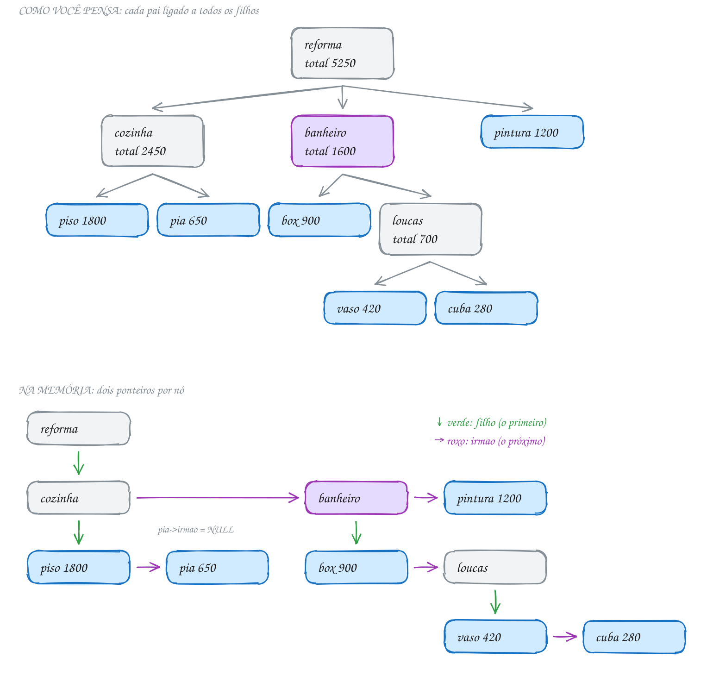
O TAD está em arvgen.h e arvgen.c. O nó e as funções recursivas:
typedef struct NoG {
char nome[20];
int valor; // o valor do próprio nó (um grupo pode ter 0)
struct NoG *filho; // o primeiro filho
struct NoG *irmao; // o próximo irmão (mesmo pai)
} NoG;
int ag_total(const NoG *r) {
int soma = r->valor;
for (const NoG *p = r->filho; p != NULL; p = p->irmao) {
soma += ag_total(p); // cada filho traz o total da sua subárvore
}
return soma;
}
static void mostra(const NoG *r, int nivel) {
printf("%*s%s: %d\n", 2 * nivel, "", r->nome, ag_total(r));
for (const NoG *p = r->filho; p != NULL; p = p->irmao) {
mostra(p, nivel + 1);
}
}
ag_adiciona(pai, nome, valor) pendura o filho novo no fim da fila de
irmãos e devolve o ponteiro dele:
#include <stdio.h>
#include "arvgen.h"
int main(void) {
NoG *reforma = ag_cria("reforma", 0);
NoG *cozinha = ag_adiciona(reforma, "cozinha", 0);
ag_adiciona(cozinha, "piso", 1800);
ag_adiciona(cozinha, "pia", 650);
NoG *banheiro = ag_adiciona(reforma, "banheiro", 0);
ag_adiciona(banheiro, "box", 900);
NoG *loucas = ag_adiciona(banheiro, "loucas", 0);
ag_adiciona(loucas, "vaso", 420);
ag_adiciona(loucas, "cuba", 280);
ag_adiciona(reforma, "pintura", 1200);
ag_mostra(reforma);
printf("Itens: %d | altura: %d | grau da raiz: %d\n",
ag_conta(reforma), ag_altura(reforma), ag_grau(reforma));
ag_libera(reforma);
return 0;
}
// Saída:
// reforma: 5250
// cozinha: 2450
// piso: 1800
// pia: 650
// banheiro: 1600
// box: 900
// loucas: 700
// vaso: 420
// cuba: 280
// pintura: 1200
// Itens: 10 | altura: 3 | grau da raiz: 3
O fluxograma segue ag_total no banheiro: soma o box (900) e as louças (700)
e para quando p chega a NULL, devolvendo 1600:
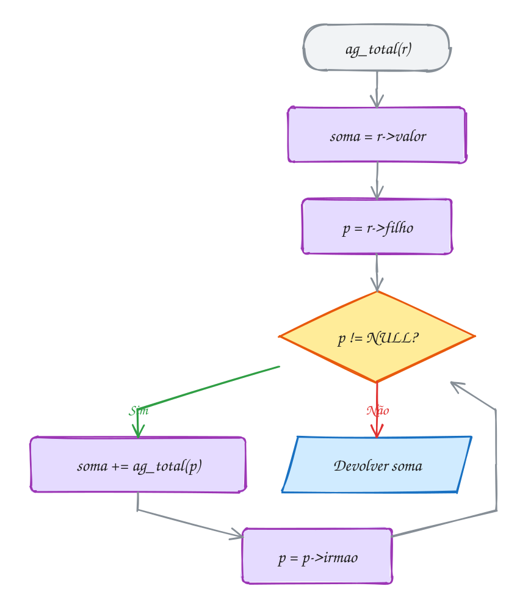
Exemplo A287 · O sumário numerado da apostila
#include <stdio.h>
#include "0144-arvgen.h"
// numera como num sumário: o número de um nó é o do pai + a posição dele
// entre os irmãos (1, 2, 3...). O prefixo vai crescendo na descida.
void sumario(const NoG *r, const char *prefixo) {
int pos = 1;
for (const NoG *p = r->filho; p != NULL; p = p->irmao, pos++) {
char numero[32];
if (prefixo[0] == '\0') {
snprintf(numero, sizeof numero, "%d", pos);
} else {
snprintf(numero, sizeof numero, "%s.%d", prefixo, pos);
}
if (p->filho == NULL) {
printf("%-6s %-14s %3d pág.\n", numero, p->nome, p->valor);
} else {
printf("%-6s %-14s %3d pág. no total\n", numero, p->nome, ag_total(p));
}
sumario(p, numero); // os filhos de p herdam o número dele
}
}
int main(void) {
NoG *apostila = ag_cria("apostila", 0);
NoG *c1 = ag_adiciona(apostila, "Fundamentos", 0);
ag_adiciona(c1, "Algoritmos", 6);
ag_adiciona(c1, "Tipos", 9);
NoG *c2 = ag_adiciona(apostila, "Condicionais", 0);
ag_adiciona(c2, "if e else", 8);
NoG *sw = ag_adiciona(c2, "switch", 0);
ag_adiciona(sw, "case", 4);
ag_adiciona(sw, "break", 3);
ag_adiciona(apostila, "Projetos", 15); // capítulo sem seções: é folha
sumario(apostila, "");
printf("Total: %d páginas em %d capítulos\n", ag_total(apostila), ag_grau(apostila));
ag_libera(apostila);
return 0;
}
// Saída:
// 1 Fundamentos 15 pág. no total
// 1.1 Algoritmos 6 pág.
// 1.2 Tipos 9 pág.
// 2 Condicionais 15 pág. no total
// 2.1 if e else 8 pág.
// 2.2 switch 7 pág. no total
// 2.2.1 case 4 pág.
// 2.2.2 break 3 pág.
// 3 Projetos 15 pág.
// Total: 45 páginas em 3 capítulos
gcc ~/LPEDC/material/A287.c ~/LPEDC/material/0144-arvgen.c -o ~/LPEDC/material/A287 && ~/LPEDC/material/A287
Exemplo A288 · A família vista como árvore binária
#include <stdio.h>
#include "0144-arvgen.h"
// Lendo filho como "esquerdo" e irmão como "direito", o NoG vira um nó de
// árvore binária. As funções abaixo percorrem as DUAS leituras.
void pre_geral(const NoG *r) { // o nó, depois cada filho
printf(" %s", r->nome);
for (const NoG *p = r->filho; p != NULL; p = p->irmao) {
pre_geral(p);
}
}
void pos_geral(const NoG *r) { // cada filho, depois o nó
for (const NoG *p = r->filho; p != NULL; p = p->irmao) {
pos_geral(p);
}
printf(" %s", r->nome);
}
void pre_binaria(const NoG *r) { // raiz, esquerda (filho), direita (irmão)
if (r != NULL) {
printf(" %s", r->nome);
pre_binaria(r->filho);
pre_binaria(r->irmao);
}
}
void em_ordem_binaria(const NoG *r) { // esquerda, raiz, direita
if (r != NULL) {
em_ordem_binaria(r->filho);
printf(" %s", r->nome);
em_ordem_binaria(r->irmao);
}
}
int altura_binaria(const NoG *r) { // irmão conta como mais um nível aqui
if (r == NULL) {
return -1;
}
int he = altura_binaria(r->filho);
int hd = altura_binaria(r->irmao);
return 1 + (he > hd ? he : hd);
}
int main(void) {
NoG *lucia = ag_cria("Lucia", 0);
NoG *ana = ag_adiciona(lucia, "Ana", 0);
ag_adiciona(ana, "Bia", 0);
ag_adiciona(ana, "Caio", 0);
ag_adiciona(lucia, "Davi", 0);
NoG *eva = ag_adiciona(lucia, "Eva", 0);
ag_adiciona(eva, "Fabio", 0);
printf("Pré-ordem da geral: ");
pre_geral(lucia);
printf("\nPré-ordem da binária: ");
pre_binaria(lucia);
printf("\nPós-ordem da geral: ");
pos_geral(lucia);
printf("\nEm ordem da binária: ");
em_ordem_binaria(lucia);
printf("\nAltura da geral: %d | altura da binária: %d\n",
ag_altura(lucia), altura_binaria(lucia));
ag_libera(lucia);
return 0;
}
// Saída:
// Pré-ordem da geral: Lucia Ana Bia Caio Davi Eva Fabio
// Pré-ordem da binária: Lucia Ana Bia Caio Davi Eva Fabio
// Pós-ordem da geral: Bia Caio Ana Davi Fabio Eva Lucia
// Em ordem da binária: Bia Caio Ana Davi Fabio Eva Lucia
// Altura da geral: 2 | altura da binária: 4
gcc ~/LPEDC/material/A288.c ~/LPEDC/material/0144-arvgen.c -o ~/LPEDC/material/A288 && ~/LPEDC/material/A288
Exercício E859 · ★☆☆
A lista de compras do churrasco é uma árvore geral (arvgen.h). Monte-a no main com ag_cria e ag_adiciona:
churrasco
carnes: picanha 120, linguica 35, frango 28
bebidas: refri 24, cerveja 60
carvao 30
Os grupos (churrasco, carnes e bebidas) valem 0. Escreva folhas(r), que conta os nós sem filhos (os itens do carrinho), e grupos(r), que conta os nós com pelo menos um filho (a raiz entra). Mostre também o total com ag_total.
Saída esperada:
Itens (folhas): 6
Grupos (nós com filhos): 3
Total: R$ 297
gcc ~/LPEDC/material/E859.c ~/LPEDC/material/0144-arvgen.c -o ~/LPEDC/material/E859 && ~/LPEDC/material/E859
Exercício E861 · ★★☆
O orçamento de uma reforma é uma árvore geral (arvgen.h). Monte-a no main:
reforma
cozinha: piso 1800, pia 650
banheiro: box 900, loucas (vaso 420, cuba 280)
pintura 1200
Escreva caminho(r, nome): mostra a trilha da raiz até o item, separada por "
", e a profundidade do item. Se o item não existir, avisa. Teste com vaso, pia, reforma e janela.
Saída esperada:
vaso: reforma > banheiro > loucas > vaso (profundidade 3)
pia: reforma > cozinha > pia (profundidade 2)
reforma: reforma (profundidade 0)
janela: não encontrado
gcc ~/LPEDC/material/E861.c ~/LPEDC/material/0144-arvgen.c -o ~/LPEDC/material/E861 && ~/LPEDC/material/E861
Exercício E862 · ★★☆
A árvore genealógica de seu Joaquim é uma árvore geral (arvgen.h). Monte-a no main:
Joaquim
Rosa: Paulo, Rita (Leo)
Jorge: Nina, Otto, Pedro
Vera
Para a foto da festa, escreva conta_nivel(r, alvo), que conta as pessoas na profundidade alvo, e mostra_nivel(r, alvo), que imprime os nomes dessa profundidade, da esquerda para a direita. No main, use ag_altura para saber quantas gerações existem.
Saída esperada:
Geração 0 (1): Joaquim
Geração 1 (3): Rosa Jorge Vera
Geração 2 (5): Paulo Rita Nina Otto Pedro
Geração 3 (1): Leo
gcc ~/LPEDC/material/E862.c ~/LPEDC/material/0144-arvgen.c -o ~/LPEDC/material/E862 && ~/LPEDC/material/E862
Exercício E864 · ★★★
Monte uma árvore geral (arvgen.h) pela entrada. Cada linha tem "pai nome valor"; na primeira, o pai é "-" e o nome é a raiz. Um filho novo entra no fim da fila de irmãos do pai. Se o pai não existir, avise e ignore a linha. No fim, mostre a árvore (ag_mostra), o número de nós, a altura e qual filho da raiz tem o maior total. Sem nenhuma linha, mostre "Árvore vazia".
Entrada:
- casamento 0
casamento buffet 0
buffet salgados 1800
buffet bolo 950
casamento decoracao 0
decoracao flores 1200
igreja padre 300
decoracao luzes 400
casamento musica 2500
buffet doces 700
Saída esperada:
pai igreja não existe: linha ignorada
casamento: 7550
buffet: 3450
salgados: 1800
bolo: 950
doces: 700
decoracao: 1600
flores: 1200
luzes: 400
musica: 2500
Itens: 9 | altura: 2
Maior gasto: buffet (R$ 3450)
gcc ~/LPEDC/material/E864.c ~/LPEDC/material/0144-arvgen.c -o ~/LPEDC/material/E864 && ~/LPEDC/material/E864
O síndico cadastra as tags da cancela do condomínio a qualquer hora, e o sistema precisa achar uma tag rápido quando o carro chega. Uma árvore binária de busca (BST) degenera numa lista se as tags chegarem em ordem crescente, e a busca vira O(n). A AVL resolve, mas guarda alturas em cada nó e tem quatro casos de rotação. A rubro-negra chega ao mesmo equilíbrio com regras mais curtas, e a versão esquerdista de Sedgewick é a mais fácil de programar.
Para entendê-la, comece por outra árvore. Na árvore 2-3, cada nó tem uma chave e 2 filhos, ou duas chaves e 3 filhos (SEDGEWICK; WAYNE, 2011). Toda chave nova entra numa folha. Se a folha tinha uma chave, passa a ter duas, e acabou. Se já tinha duas, fica com três por um instante e estoura: a chave do meio sobe para o pai, e as outras duas viram nós separados. Se o pai também estourar, o processo se repete para cima. A árvore só ganha altura quando a raiz estoura, e aí todos os caminhos crescem juntos. Por isso todas as folhas ficam no mesmo nível, sempre.
A 2-3 é equilibrada, mas nós de tamanhos diferentes são chatos de programar.
A rubro-negra esquerdista (left-leaning red-black, LLRB) guarda a
mesma árvore 2-3 usando só nós binários (SEDGEWICK, 2008). Um nó de duas
chaves [a b] vira dois nós binários: o b, com o a pendurado à esquerda
por um link vermelho. Os outros links, que ligam nós de verdade da 2-3,
são pretos. Como cada nó tem um único pai, ele guarda a cor do link que
chega nele, num bool vermelho (SEDGEWICK, 2008).
As regras da LLRB são a árvore 2-3 escrita em cores. Link vermelho só à
esquerda, porque é assim que se escolheu desenhar o nó de duas chaves.
Nunca dois vermelhos seguidos, porque isso seria um nó de três chaves,
que na 2-3 não existe. E todo caminho da raiz até um NULL passa pelo mesmo
número de links pretos, a altura preta, porque na 2-3 todas as folhas
estão no mesmo nível. A raiz é sempre preta (SEDGEWICK, 2008).
Dessas regras sai a garantia de altura. O caminho mais curto possível só tem pretos; o mais longo alterna preto e vermelho, sem dois vermelhos juntos. Então o mais longo tem no máximo o dobro do mais curto, e a altura fica abaixo de 2 · log₂(n + 1). Busca, inserção e remoção custam O(log n) (CORMEN et al., 2024, cap. 13).
A inserção começa como na BST: desce comparando e pendura um nó novo, sempre
vermelho, porque a chave nova se junta a um nó da 2-3 que já existe. Isso
pode quebrar uma regra. Na volta da recursão, cada ancestral h confere três
situações e aplica o conserto de cada uma, nesta ordem. A tabela mostra
cada conserto e o que ele faz na árvore 2-3 por trás:
Situação em h |
Conserto | Na árvore 2-3 |
|---|---|---|
| filho direito vermelho, esquerdo preto | rotação à esquerda | deita o nó de 2 chaves para a esquerda |
| filho esquerdo e neto esquerdo vermelhos | rotação à direita | arruma um nó de 3 chaves temporário |
| os dois filhos vermelhos | inverte as cores | o nó de 3 chaves estoura e a do meio sobe |
O último conserto merece atenção. A inversão de cores pinta os dois
filhos de h de preto e o próprio h de vermelho. Na 2-3, é o estouro: as
chaves dos lados viram nós separados, e a do meio, h, passa a fazer parte
do nó do pai. Lá em cima, esse vermelho novo pode disparar os consertos de
novo, como o estouro que sobe na 2-3.
A LLRB é a variante de Sedgewick. A rubro-negra clássica do Cormen, que
é a cobrada na prova do PPGI, põe a cor no nó, aceita filho vermelho dos
dois lados (o que equivale a uma árvore 2-3-4), usa folhas NIL pretas e
conserta a inserção pelos casos do tio, com no máximo duas rotações. O
assunto 0177 trata dela (CORMEN et al., 2024, cap. 13).
[!WARNING] Na rotação, quem sobe herda a cor de quem desce (
x->vermelho = h->vermelho); sem isso, a altura preta se desencontra. E a raiz pode ficar vermelha após uma inversão no topo:rn_inserea pinta de preto em toda inserção.
As tags da cancela de um condomínio: 30, 10 e 20 formam um zigue-zague e
disparam os três consertos. Com 50 e 40, o 20 vermelho fica colado no 40, o nó
2-3 [20 40]:
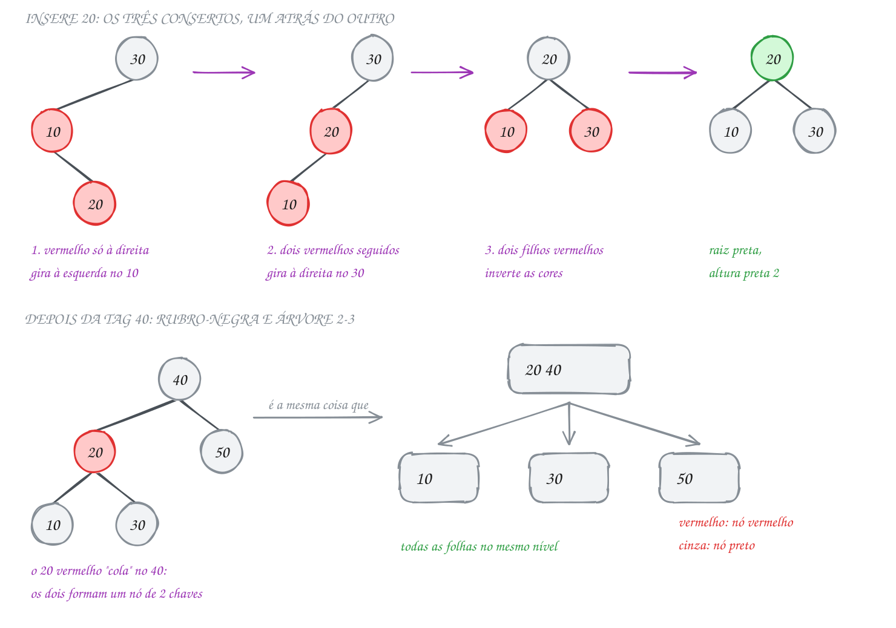
A inserção de rubronegra.c. A rotação é a da AVL, e a cor do link sobe junto:
static NoRN *gira_esquerda(NoRN *h) {
NoRN *x = h->dir;
h->dir = x->esq;
x->esq = h;
x->vermelho = h->vermelho; // x herda a cor do link que chegava em h
h->vermelho = true;
rotacoes++;
return x;
}
static NoRN *insere(NoRN *h, int chave) {
if (h == NULL) {
return novo_no(chave); // todo nó novo chega vermelho
}
if (chave < h->chave) {
h->esq = insere(h->esq, chave);
} else if (chave > h->chave) {
h->dir = insere(h->dir, chave);
}
// na volta, os três consertos, nesta ordem
if (eh_vermelho(h->dir) && !eh_vermelho(h->esq)) {
h = gira_esquerda(h); // 1. vermelho à direita
}
if (eh_vermelho(h->esq) && eh_vermelho(h->esq->esq)) {
h = gira_direita(h); // 2. dois vermelhos seguidos
}
if (eh_vermelho(h->esq) && eh_vermelho(h->dir)) {
inverte_cores(h); // 3. dois filhos vermelhos
}
return h;
}
NoRN *rn_insere(NoRN *raiz, int chave) {
raiz = insere(raiz, chave);
raiz->vermelho = false; // a raiz é sempre preta
return raiz;
}
eh_vermelho(NULL) devolve false: NULL conta como preto. O cliente
cadastra as tags e mostra a árvore em pré-ordem, com * nos vermelhos:
#include <stdio.h>
#include "rubronegra.h"
int main(void) {
int tags[] = {30, 10, 20, 50, 40};
NoRN *raiz = NULL;
for (int i = 0; i < 5; i++) {
raiz = rn_insere(raiz, tags[i]);
printf("Insere %d: pré", tags[i]);
rn_pre_ordem(raiz);
printf(" | rotações %d | inversões %d\n", rn_rotacoes(), rn_inversoes());
}
printf("Altura %d, altura preta %d\n", rn_altura(raiz), rn_altura_preta(raiz));
raiz = rn_libera(raiz);
return 0;
}
// Saída:
// Insere 30: pré 30 | rotações 0 | inversões 0
// Insere 10: pré 30 10* | rotações 0 | inversões 0
// Insere 20: pré 20 10 30 | rotações 2 | inversões 1
// Insere 50: pré 20 10 50 30* | rotações 3 | inversões 1
// Insere 40: pré 40 20* 10 30 50 | rotações 6 | inversões 2
// Altura 2, altura preta 2
O fluxograma mostra os três if da volta. O caminho verde é o do nó 30 quando
a tag 20 chega: ele faz o segundo e o terceiro conserto:
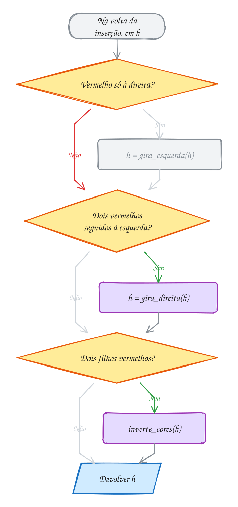
A tag 40 desce 20, 50, 30 e vira filha direita vermelha do 30, que também é vermelho:
| Nó na volta | O que encontra | Conserto | Como fica a subárvore |
|---|---|---|---|
| 30 | filho direito 40 vermelho | rotação à esquerda | 40* com 30* à esquerda |
| 50 | 40* e 30* seguidos à esquerda | rotação à direita | 40 com 30* e 50* |
| 40 | dois filhos vermelhos | inverte as cores | 40* com 30 e 50 pretos |
| 20 | filho direito 40 vermelho | rotação à esquerda | 40 com 20* (10, 30) e 50 |
Três rotações e uma inversão neste exemplo.
Exemplo A289 · Mil chaves em ordem, mil ao contrário
#include <math.h>
#include <stdio.h>
#include "0145-rubronegra.h"
void relata(const char *nome, const NoRN *r, int rot, int inv) {
printf("%-12s altura %2d | altura preta %2d | rotações %4d | inversões %4d\n",
nome, rn_altura(r), rn_altura_preta(r), rot, inv);
}
int main(void) {
int n = 1000;
NoRN *cresce = NULL;
for (int i = 1; i <= n; i++) {
cresce = rn_insere(cresce, i);
}
int rot1 = rn_rotacoes(), inv1 = rn_inversoes();
relata("crescente:", cresce, rot1, inv1);
NoRN *desce = NULL; // os contadores são acumulados: desconte os de antes
for (int i = n; i >= 1; i--) {
desce = rn_insere(desce, i);
}
relata("decrescente:", desce, rn_rotacoes() - rot1, rn_inversoes() - inv1);
NoRN *mistura = NULL; // 1000 chaves embaralhadas: i * 7919 % 1000
int rot2 = rn_rotacoes(), inv2 = rn_inversoes();
for (int i = 0; i < n; i++) {
mistura = rn_insere(mistura, i * 7919 % n);
}
relata("embaralhada:", mistura, rn_rotacoes() - rot2, rn_inversoes() - inv2);
printf("Limite teórico: altura <= 2 log2(n + 1) = %.1f\n", 2 * log2(n + 1.0));
printf("Busca 777 na crescente: %s\n", rn_busca(cresce, 777) ? "achou" : "não achou");
cresce = rn_libera(cresce);
desce = rn_libera(desce);
mistura = rn_libera(mistura);
return 0;
}
// Saída:
// crescente: altura 9 | altura preta 9 | rotações 991 | inversões 985
// decrescente: altura 14 | altura preta 9 | rotações 985 | inversões 985
// embaralhada: altura 11 | altura preta 8 | rotações 546 | inversões 658
// Limite teórico: altura <= 2 log2(n + 1) = 19.9
// Busca 777 na crescente: achou
gcc ~/LPEDC/material/A289.c ~/LPEDC/material/0145-rubronegra.c -o ~/LPEDC/material/A289 -lm && ~/LPEDC/material/A289
Exemplo A290 · A árvore 2-3 escondida na rubro-negra
#include <stdio.h>
#include "0145-rubronegra.h"
// Cole cada nó vermelho no pai: os dois viram um nó de 2 chaves (um "3-nó",
// com 3 filhos). O resultado é uma árvore 2-3, com todas as folhas no mesmo
// nível. Esta função mostra os nós 2-3 que estão no nível alvo.
void nivel_23(const NoRN *h, int alvo) {
if (h == NULL) {
return;
}
const NoRN *e = h->esq;
bool tres = e != NULL && e->vermelho; // h + filho vermelho = 3-nó
if (alvo == 0) {
if (tres) {
printf(" [%d %d]", e->chave, h->chave);
} else {
printf(" [%d]", h->chave);
}
return;
}
if (tres) { // os 3 filhos do 3-nó
nivel_23(e->esq, alvo - 1);
nivel_23(e->dir, alvo - 1);
} else {
nivel_23(h->esq, alvo - 1);
}
nivel_23(h->dir, alvo - 1);
}
int main(void) {
int chaves[] = {50, 20, 80, 10, 30, 60, 90, 40, 70, 25};
NoRN *raiz = NULL;
for (int i = 0; i < 10; i++) {
raiz = rn_insere(raiz, chaves[i]);
}
printf("Rubro-negra (pré, * = vermelho):");
rn_pre_ordem(raiz);
printf("\nAltura: %d | altura preta: %d\n", rn_altura(raiz), rn_altura_preta(raiz));
printf("Vista como árvore 2-3:\n");
for (int d = 0; d < rn_altura_preta(raiz); d++) {
printf(" nível %d:", d);
nivel_23(raiz, d);
printf("\n");
}
raiz = rn_libera(raiz);
return 0;
}
// Saída:
// Rubro-negra (pré, * = vermelho): 50 30 20* 10 25 40 80 70 60* 90
// Altura: 3 | altura preta: 3
// Vista como árvore 2-3:
// nível 0: [50]
// nível 1: [20 30] [80]
// nível 2: [10] [25] [40] [60 70] [90]
gcc ~/LPEDC/material/A290.c ~/LPEDC/material/0145-rubronegra.c -o ~/LPEDC/material/A290 && ~/LPEDC/material/A290
Exercício E865 · ★☆☆
Insira os códigos de 1 a 10, em ordem, numa rubro-negra (rubronegra.h) e escreva conta_vermelhos(r), que devolve quantos nós vermelhos a árvore tem. Escreva também conta_nos(r) e mostre quantos nós são pretos. Mostre ainda a pré-ordem (rn_pre_ordem) numa linha que começa com "pré:".
Saída esperada:
pré: 4 2 1 3 8 6* 5 7 10 9*
nós: 10 | vermelhos: 2 | pretos: 8
gcc ~/LPEDC/material/E865.c ~/LPEDC/material/0145-rubronegra.c -o ~/LPEDC/material/E865 && ~/LPEDC/material/E865
Exercício E867 · ★★☆
Escreva confere(r), o fiscal da rubro-negra esquerdista. Ela devolve a altura preta (quantos nós pretos há da raiz até um NULL) se as três regras valerem, ou um código negativo com a primeira regra quebrada que achar:
-1: um link vermelho à direita;
-2: dois vermelhos seguidos (um vermelho com filho esquerdo vermelho);
-3: dois caminhos com quantidades diferentes de nós pretos.
Teste com quatro árvores: a do TAD (rubronegra.h) com as chaves de 1 a 20 e três montadas à mão com malloc (escreva uma função no(chave, vermelho, esq, dir)), cada nó dado como chave/cor:
A: 20 preto, filho esquerdo 10 preto, filho direito 30 vermelho
B: 30 preto, esquerdo 20 vermelho (com filho esquerdo 10 vermelho),
direito 40 preto
C: 20 preto, esquerdo 10 preto (com filho esquerdo 5 preto),
direito 30 preto sem filhos
Saída esperada:
TAD (1 a 20): ok, altura preta 4
Árvore A: quebra a regra 1
Árvore B: quebra a regra 2
Árvore C: quebra a regra 3
gcc ~/LPEDC/material/E867.c ~/LPEDC/material/0145-rubronegra.c -o ~/LPEDC/material/E867 && ~/LPEDC/material/E867
Exercício E868 · ★★☆
A eleição do síndico guarda os números votados numa rubro-negra esquerdista que você escreve do zero. Cada nó tem numero e qtd (quantos votos): número repetido não cria nó novo, só soma 1 em qtd. Escreva insere, apura(r), que mostra cada número em ordem crescente com a quantidade ("voto" no singular quando for 1), e vencedor(r), que devolve o nó com mais votos.
A urna tem estes 12 votos, na ordem:
45 12 45 13 30 12 45 13 45 30 12 99
Saída esperada:
12: 3 votos
13: 2 votos
30: 2 votos
45: 4 votos
99: 1 voto
Vencedor: 45 com 4 de 12 votos
gcc ~/LPEDC/material/E868.c ~/LPEDC/material/0145-rubronegra.c -o ~/LPEDC/material/E868 && ~/LPEDC/material/E868
Exercício E870 · ★★★
Escreva do zero (sem o rubronegra.h, que guarda int) uma rubro-negra esquerdista de NOMES para a lista de convidados de uma festa. Compare com strcmp; nome repetido é ignorado. Insira, nesta ordem:
Marcos Ana Teresa Bruno Lia Zeca Carla Otavio Duda Ana
Mostre a lista em ordem, a pré-ordem com * nos vermelhos, a altura, a altura preta e o resultado de duas buscas.
Saída esperada:
Em ordem: Ana Bruno Carla Duda Lia Marcos Otavio Teresa Zeca
Pré-ordem: Marcos Duda Bruno* Ana Carla Lia Teresa Otavio Zeca
Altura 3, altura preta 3
Lia: na lista | Rafa: fora
gcc ~/LPEDC/material/E870.c ~/LPEDC/material/0145-rubronegra.c -o ~/LPEDC/material/E870 && ~/LPEDC/material/E870
O acervo de uma biblioteca tem milhões de fichas guardadas no disco. Ler algo da memória leva nanossegundos; ler um bloco de um HD leva uns 10 milissegundos, um milhão de vezes mais. Numa AVL com 2 milhões de livros, a busca desce uns 21 nós, e cada nó pode estar num bloco diferente: 21 idas ao disco, um quinto de segundo por busca (ZIVIANI, 2010, cap. 6). Quando os dados moram no disco, o que importa é ler poucos nós, e para isso cada nó precisa decidir muito mais que "esquerda ou direita".
A árvore B é uma árvore de busca com nós gordos, feita para disco. Cada
nó guarda várias chaves em ordem e tem um filho a mais do que chaves.
Num banco de dados, um nó costuma ocupar exatamente um bloco do disco, e
uma leitura traz o nó inteiro (BAYER; McCREIGHT, 1972). As chaves do nó
separam os filhos: num nó [40 70], o filho 0 guarda as chaves menores que
40, o filho 1 as que ficam entre 40 e 70, e o filho 2 as maiores que 70. É a
mesma regra da BST, generalizada para várias chaves.
O tamanho dos nós é controlado pelo grau mínimo t, um número fixo da
árvore. Todo nó, menos a raiz, tem de t - 1 a 2t - 1 chaves; a raiz pode
ter só uma. Um nó interno, que não é folha, com k chaves tem k + 1
filhos. E todas as folhas ficam no mesmo nível (CORMEN et al., 2024, cap.
18). O mínimo de t - 1 chaves impede nós quase vazios, que fariam a árvore
crescer em altura à toa.
O TAD deste assunto usa t = 2: cada nó tem de 1 a 3 chaves e de 2 a 4
filhos. Essa árvore B pequena tem nome próprio, árvore 2-3-4, e é a prima da
2-3 que você viu na rubro-negra (0145). Com t pequeno, os desenhos cabem na
página; num banco de dados de verdade, t passa de cem.
Como cada nó abaixo da raiz tem pelo menos t filhos, a árvore se alarga
muito a cada nível e a altura fica pequena: com n chaves, h ≤ log_t((n + 1) / 2) (CORMEN et al., 2024, cap. 18). Com chaves int e
ponteiros de 8 bytes, t = 170 faz um nó caber num bloco de 4096 bytes, e um
bilhão de chaves fica em altura 3. São 4 blocos lidos por busca, contra uns
30 de uma árvore binária.
A busca é a da BST com um laço dentro do nó. Ande pelas chaves do nó até achar uma maior ou igual à procurada. Se for igual, achou. Se não, desça pelo filho daquela posição e repita. Ela lê um nó por nível, altura + 1 nós no total (CORMEN et al., 2024, cap. 18).
A inserção sempre põe a chave nova numa folha. Se a folha tem espaço,
basta encaixar a chave em ordem. Se está cheia, com 2t - 1 chaves,
acontece a divisão: o nó vira dois nós de t - 1 chaves cada, e a
chave do meio sobe para o pai, entre os dois (CORMEN et al., 2024, cap.
18). Com t = 2, a folha [10 20 30] vira [10] e [30], e o 20 sobe.
E se o pai também estiver cheio? A chave que sobe não teria onde ficar. O TAD evita isso dividindo na descida: a caminho da folha, todo nó cheio encontrado é dividido antes de entrar nele. Assim o pai de quem se divide sempre tem espaço. Se a própria raiz está cheia, ela se divide e a chave do meio vira uma raiz nova, acima das duas metades (CORMEN et al., 2024, cap. 18). A árvore B só cresce por cima, pela raiz, e é por isso que as folhas continuam todas no mesmo nível.
[!WARNING] Depois de
divide(x, i), a chave que subiu está emx->chave[i]. Semif (chave > x->chave[i]) i++;, chaves grandes vão para a metade errada. E "ordem m" muda de livro para livro (m filhos no Knuth, de m a 2m registros no Ziviani); o curso usa otdo Cormen.
O acervo de uma biblioteca recebe 11 livros: 40, 10, 70, 20, 50, 80, 30, 60, 90,
25 e 85. O 25 divide a folha [10 20 30] e o 20 sobe; o 85 divide a raiz
[20 40 70] e o 40 vira a raiz nova. A busca pelo 60 lê três nós:
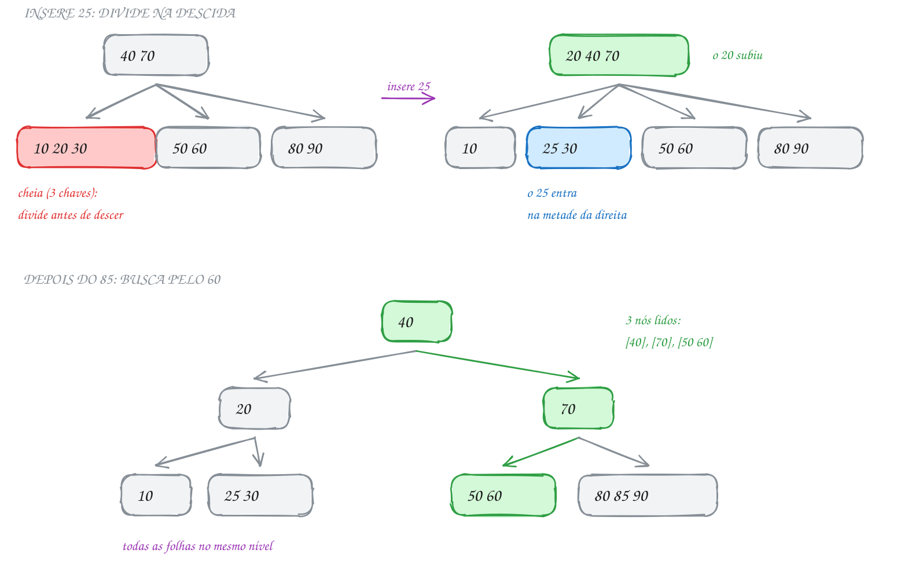
A divisão e a inserção na raiz, em arvoreb.c (AB_T é o t; AB_MAX, 2t - 1):
static void divide(NoB *pai, int i) {
NoB *y = pai->filho[i]; // o filho cheio
NoB *z = novo_no(y->folha); // a metade da direita
z->n = AB_T - 1;
for (int j = 0; j < AB_T - 1; j++) {
z->chave[j] = y->chave[j + AB_T]; // as chaves depois do meio
}
if (!y->folha) {
for (int j = 0; j < AB_T; j++) {
z->filho[j] = y->filho[j + AB_T]; // e os filhos delas
}
}
y->n = AB_T - 1; // y fica com as chaves antes do meio
for (int j = pai->n; j > i; j--) { // abre espaço no pai
pai->filho[j + 1] = pai->filho[j];
}
pai->filho[i + 1] = z;
for (int j = pai->n - 1; j >= i; j--) {
pai->chave[j + 1] = pai->chave[j];
}
pai->chave[i] = y->chave[AB_T - 1]; // a chave do meio sobe
pai->n++;
}
NoB *ab_insere(NoB *raiz, int chave) {
if (ab_busca(raiz, chave, NULL)) {
return raiz; // repetida
}
if (raiz == NULL) {
raiz = novo_no(true);
}
if (raiz->n == AB_MAX) { // raiz cheia: a árvore cresce por cima
NoB *s = novo_no(false);
s->filho[0] = raiz;
divide(s, 0);
raiz = s;
}
insere_nao_cheio(raiz, chave);
return raiz;
}
A divide só diminui y->n: as chaves do fim ficam no vetor, fora da parte em uso.
O cliente:
#include <stdio.h>
#include "arvoreb.h"
int main(void) {
int livros[] = {40, 10, 70, 20, 50, 80, 30, 60, 90, 25, 85};
NoB *acervo = NULL;
for (int i = 0; i < 11; i++) {
acervo = ab_insere(acervo, livros[i]);
}
printf("Árvore B com 11 livros (altura %d, %d divisões):\n",
ab_altura(acervo), ab_divisoes());
ab_mostra(acervo);
int procura[] = {60, 65};
for (int i = 0; i < 2; i++) {
int lidos;
bool achou = ab_busca(acervo, procura[i], &lidos);
printf("Livro %d: %s, %d nós lidos\n", procura[i],
achou ? "achou" : "não tem", lidos);
}
acervo = ab_libera(acervo);
return 0;
}
// Saída:
// Árvore B com 11 livros (altura 2, 4 divisões):
// nível 0: [40]
// nível 1: [20] [70]
// nível 2: [10] [25 30] [50 60] [80 85 90]
// Livro 60: achou, 3 nós lidos
// Livro 65: não tem, 3 nós lidos
O fluxograma segue insere_nao_cheio na raiz [40 70] quando o 25 chega. O
filho 0, cheio, se divide e o 20 sobe. Como 25 > 20, o i++ leva a chave à
metade nova, folha [30]:
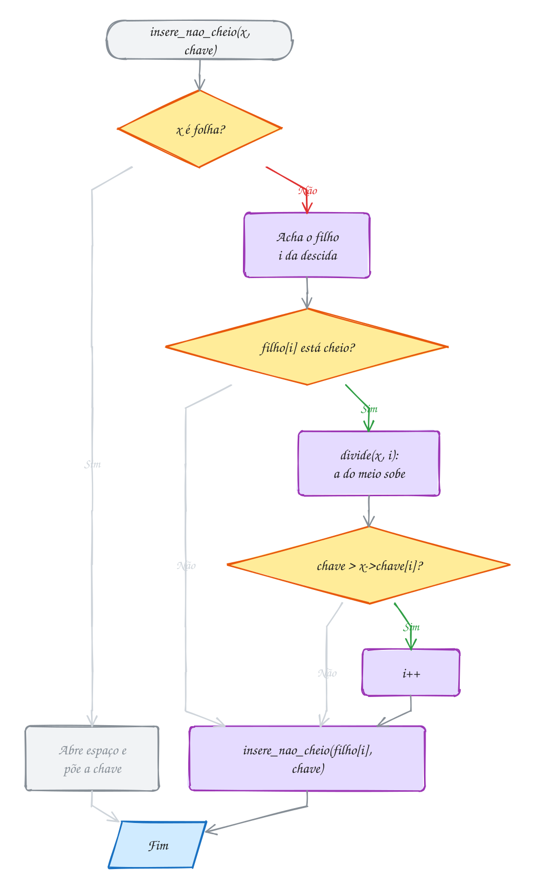
Exemplo A291 · Quantas idas ao disco
#include <math.h>
#include <stdio.h>
#include "0146-arvoreb.h"
// Num banco de dados, cada nó da árvore B é um bloco do disco, e ler um bloco
// custa muito mais que comparar chaves na memória. O que importa é a altura.
int main(void) {
// 1. na prática, com o TAD (T = 2, até 3 chaves por nó)
NoB *r = NULL;
int n = 100000;
for (int i = 1; i <= n; i++) {
r = ab_insere(r, i);
}
int lidos;
ab_busca(r, 77777, &lidos);
printf("TAD com T = 2 e %d chaves: altura %d, busca do 77777 leu %d nós\n",
n, ab_altura(r), lidos);
printf("Uma árvore binária perfeita com %d chaves teria altura %d\n",
n, (int)floor(log2(n)));
r = ab_libera(r);
// 2. na teoria: altura máxima de uma árvore B, h <= log_t((n + 1) / 2)
int ts[] = {2, 50, 500};
double ns[] = {1e6, 1e9};
printf("\nAltura máxima (nós lidos = altura + 1):\n");
printf("%14s %8s %8s %8s\n", "chaves", "T=2", "T=50", "T=500");
for (int j = 0; j < 2; j++) {
printf("%14.0f", ns[j]);
for (int i = 0; i < 3; i++) {
double h = log((ns[j] + 1) / 2) / log(ts[i]); // log na base t
printf(" %8d", (int)floor(h));
}
printf("\n");
}
return 0;
}
// Saída:
// TAD com T = 2 e 100000 chaves: altura 15, busca do 77777 leu 16 nós
// Uma árvore binária perfeita com 100000 chaves teria altura 16
//
// Altura máxima (nós lidos = altura + 1):
// chaves T=2 T=50 T=500
// 1000000 18 3 2
// 1000000000 28 5 3
gcc ~/LPEDC/material/A291.c ~/LPEDC/material/0146-arvoreb.c -o ~/LPEDC/material/A291 -lm && ~/LPEDC/material/A291
Exemplo A292 · As notas fiscais em ordem
#include <stdio.h>
#include "0146-arvoreb.h"
// Em ordem num nó de várias chaves: filho 0, chave 0, filho 1, chave 1, ...,
// chave n-1, filho n. Cada chave fica entre as subárvores das menores e das
// maiores que ela, como na BST.
void em_ordem(const NoB *r) {
for (int i = 0; i < r->n; i++) {
if (!r->folha) {
em_ordem(r->filho[i]);
}
printf(" %d", r->chave[i]);
}
if (!r->folha) {
em_ordem(r->filho[r->n]); // o último filho, depois da última chave
}
}
// quantas chaves há em cada nível (nivel conta a partir da raiz)
void conta_por_nivel(const NoB *r, int nivel, int qtd[]) {
qtd[nivel] += r->n;
if (!r->folha) {
for (int i = 0; i <= r->n; i++) {
conta_por_nivel(r->filho[i], nivel + 1, qtd);
}
}
}
int main(void) {
int notas[] = {512, 87, 340, 905, 23, 678, 150, 401, 799, 266, 33, 960, 610, 445, 118};
NoB *r = NULL;
for (int i = 0; i < 15; i++) {
r = ab_insere(r, notas[i]);
}
printf("Por nível:\n");
ab_mostra(r);
printf("Em ordem:");
em_ordem(r);
printf("\n");
int qtd[10] = {0};
conta_por_nivel(r, 0, qtd);
for (int d = 0; d <= ab_altura(r); d++) {
printf("chaves no nível %d: %d\n", d, qtd[d]);
}
r = ab_libera(r);
return 0;
}
// Saída:
// Por nível:
// nível 0: [340]
// nível 1: [87] [512 678]
// nível 2: [23 33] [118 150 266] [401 445] [610] [799 905 960]
// Em ordem: 23 33 87 118 150 266 340 401 445 512 610 678 799 905 960
// chaves no nível 0: 1
// chaves no nível 1: 3
// chaves no nível 2: 11
gcc ~/LPEDC/material/A292.c ~/LPEDC/material/0146-arvoreb.c -o ~/LPEDC/material/A292 && ~/LPEDC/material/A292
Exercício E871 · ★☆☆
Insira os códigos de 1 a 20, em ordem, numa árvore B (arvoreb.h, T = 2) e escreva duas funções recursivas: conta_chaves(r), o total de chaves, e conta_nos(r), o total de nós. Mostre a árvore com ab_mostra e a média de chaves por nó.
Saída esperada:
nível 0: [8]
nível 1: [4] [12]
nível 2: [2] [6] [10] [14 16 18]
nível 3: [1] [3] [5] [7] [9] [11] [13] [15] [17] [19 20]
chaves: 20 | nós: 17 | média: 1.18 chaves por nó
gcc ~/LPEDC/material/E871.c ~/LPEDC/material/0146-arvoreb.c -o ~/LPEDC/material/E871 && ~/LPEDC/material/E871
Exercício E873 · ★★☆
No disco, cada nó da árvore B ocupa um bloco inteiro, cheio ou não. A ocupação é a fração das vagas de chave que estão em uso: chaves / (nós · AB_MAX). Monte duas árvores com as chaves de 1 a 200: uma inserindo em ordem crescente e outra na ordem embaralhada i * 37 % 200 + 1 (i de 0 a 199, que passa por todos os números de 1 a 200 uma vez só). Escreva mede(r, &chaves, &nos), que soma as chaves e os nós de uma árvore, e mostre nós, altura e ocupação de cada uma.
Saída esperada:
crescente: nós 195 | altura 6 | ocupação 34.2%
embaralhada: nós 127 | altura 5 | ocupação 52.5%
gcc ~/LPEDC/material/E873.c ~/LPEDC/material/0146-arvoreb.c -o ~/LPEDC/material/E873 && ~/LPEDC/material/E873
Exercício E874 · ★★☆
A contabilidade quer as notas fiscais de uma faixa de números. Insira estas 15 notas numa árvore B (arvoreb.h, que fica com 9 nós), na ordem:
512 87 340 905 23 678 150 401 799 266 33 960 610 445 118
Escreva intervalo(r, a, b, &visitados): mostra, em ordem crescente, as chaves de a até b e conta quantos nós foram lidos. Não leia subárvores que não podem ter chave na faixa. Teste com as faixas 300-700, 100-160 e 970-999.
Saída esperada:
notas de 300 a 700: 340 401 445 512 610 678 (7 nós lidos de 9)
notas de 100 a 160: 118 150 (3 nós lidos de 9)
notas de 970 a 999: (3 nós lidos de 9)
gcc ~/LPEDC/material/E874.c ~/LPEDC/material/0146-arvoreb.c -o ~/LPEDC/material/E874 && ~/LPEDC/material/E874
Exercício E876 · ★★★
Escreva do zero uma árvore B de grau mínimo T = 3: cada nó guarda de 2 a 5 chaves (a raiz pode ter 1) e tem até 6 filhos. Use a inserção com divisão na descida, como no texto, mas com T e MAX definidos no seu arquivo (o TAD arvoreb.h tem T = 2 fixo). Insira i * 7 % 31 para i de 1 a 30 (são os números de 1 a 30, embaralhados: 7, 14, 21, 28, 4, 11...). Mostre a árvore por nível e o resultado de duas buscas, contando os blocos lidos.
Saída esperada:
nível 0: [14]
nível 1: [4 7 11] [18 21 26]
nível 2: [1 2 3] [5 6] [8 9 10] [12 13] [15 16 17] [19 20] [22 23 24 25] [27 28 29 30]
busca 23: achou, 3 blocos lidos
busca 31: não achou, 3 blocos lidos
gcc ~/LPEDC/material/E876.c ~/LPEDC/material/0146-arvoreb.c -o ~/LPEDC/material/E876 && ~/LPEDC/material/E876
Você digita bol no celular e o teclado oferece "bola", "boleto", "bolo" e
"bolsa" na hora. Ele não compara bol com cada uma das milhares de palavras
do dicionário. Ele vai direto ao lugar onde moram as palavras que começam
com bol, como quem abre um dicionário de papel na letra B, depois no
pedaço "bo", depois em "bol". Na estrutura que ele usa, o prefixo é o
endereço.
Essa estrutura é a trie, nome tirado de retrieval (recuperação),
também chamada árvore de prefixos. Cada aresta da árvore é uma
letra, e o caminho da raiz até um nó soletra um prefixo. Da raiz, a aresta
b leva ao nó de "b"; dele, a aresta o leva ao nó de "bo"; dele, a l
leva ao nó de "bol". Todas as palavras que começam com "bol" moram na
subárvore desse nó (FREDKIN, 1960).
Note que os nós não guardam palavras inteiras. A palavra está espalhada no
caminho, uma letra por aresta. Isso cria uma dúvida: o nó de "bol" existe,
porque "bolo" passa por ele, mas "bol" não é uma palavra. Para separar os
dois casos, cada nó guarda um bool fim, verdadeiro quando alguma palavra
termina ali (ZIVIANI, 2010, cap. 5). O nó do o depois de "bol" tem fim
verdadeiro, porque "bolo" é palavra; o nó de "bol" tem fim falso.
Como achar o filho de uma letra? Com letras minúsculas sem acento, cada nó
tem um vetor de 26 ponteiros, um por letra. O filho da letra c fica em
filho[c - 'a']: a conta transforma 'a' em 0, 'b' em 1, e assim até
'z' em 25 (CORTÉS, 2015). Ponteiro NULL quer dizer que nenhuma palavra
segue por aquela letra.
Com isso, as operações são curtas. Para inserir uma palavra, desça
letra por letra pelo filho correspondente; se o filho não existe, crie-o.
Ao fim da palavra, marque fim = true no nó onde você parou. Para
buscar, desça do mesmo jeito; se faltar um filho no meio, a palavra não
existe. Se chegar ao fim do texto, a resposta é o fim daquele nó (ZIVIANI,
2010, cap. 5).
O autocompletar junta as duas ideias. Desça até o nó do prefixo
digitado. Depois percorra toda a subárvore dele, filho por filho, de a a
z, montando as letras do caminho; cada vez que encontrar um nó com fim
verdadeiro, imprima a palavra montada. Como os filhos são visitados em
ordem alfabética, as sugestões já saem ordenadas.
O custo é a grande vantagem. Inserir e buscar custam O(L), com L o tamanho da palavra, e não dependem de quantas palavras existem: "bolsa" desce 5 nós num dicionário de 10 palavras ou de 100 mil. Uma BST com 100 mil palavras faria umas 17 comparações de strings, cada uma podendo olhar várias letras (SEDGEWICK; WAYNE, 2011).
O preço é memória. Cada nó com 26 ponteiros e o fim ocupa 216 bytes, e
quase todos os ponteiros são NULL, porque poucas letras seguem cada
prefixo. Oito palavras curtas cabem em 45 bytes como strings e, numa trie,
ocupam 22 nós, quase 5 KB. Guardar os filhos numa lista, como no primeiro
filho, próximo irmão (0144), ou numa BST por nó, a árvore ternária, gasta
bem menos, ao custo de achar o filho com mais passos.
[!WARNING] Achar o nó não é achar a palavra: a busca olha o
fim(return n != NULL && n->fim;). E o índice só vale de'a'a'z':'B' - 'a'dá -31 e'ã'não é umcharsó em UTF-8.
Um teclado guarda bolo, bola, bolsa, boleto, bom, bombom, pão e pastel (sem
acento: pao). No ramo do b, o caminho verde é o prefixo "bol"; os nós verdes
marcam o fim de uma palavra:
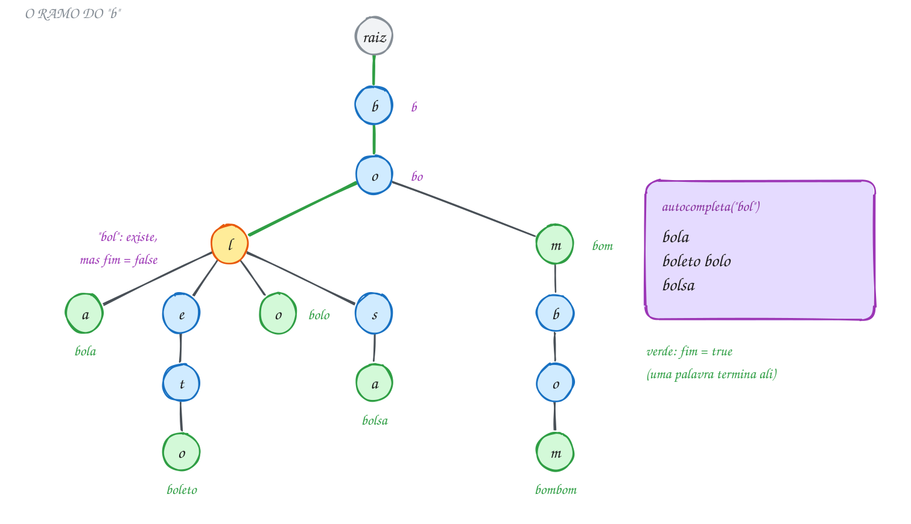
O nó e a inserção, em trie.c (o calloc deixa os ponteiros NULL e fim
falso):
typedef struct NoTrie {
struct NoTrie *filho[TRIE_LETRAS]; // filho['c' - 'a'] segue a letra c
bool fim; // uma palavra termina aqui?
} NoTrie;
bool trie_insere(NoTrie *r, const char *palavra) {
for (const char *p = palavra; *p != '\0'; p++) { // confere antes de mexer
if (*p < 'a' || *p > 'z') {
return false;
}
}
for (; *palavra != '\0'; palavra++) {
int i = *palavra - 'a';
if (r->filho[i] == NULL) {
r->filho[i] = trie_cria(); // o caminho ainda não existe: cria
}
r = r->filho[i];
}
r->fim = true; // marca o fim da palavra
return true;
}
O cliente monta o dicionário e testa três textos:
#include <stdio.h>
#include "trie.h"
int main(void) {
const char *dicionario[] = {"bolo", "bola", "bolsa", "boleto", "bom", "bombom", "pao", "pastel"};
NoTrie *teclado = trie_cria();
for (int i = 0; i < 8; i++) {
trie_insere(teclado, dicionario[i]);
}
const char *testes[] = {"bol", "bom", "pa"};
for (int i = 0; i < 3; i++) {
printf("\"%s\": palavra? %s | sugestões:", testes[i],
trie_busca(teclado, testes[i]) ? "sim" : "não");
trie_autocompleta(teclado, testes[i], 4);
printf("\n");
}
printf("Nós: %d (%zu bytes cada)\n", trie_nos(teclado), sizeof(NoTrie));
trie_libera(teclado);
return 0;
}
// Saída:
// "bol": palavra? não | sugestões: bola boleto bolo bolsa
// "bom": palavra? sim | sugestões: bom bombom
// "pa": palavra? não | sugestões: pao pastel
// Nós: 22 (216 bytes cada)
O fluxograma mostra a inserção de "bom". O b e o o já existem; o m é novo
e recebe fim = true:
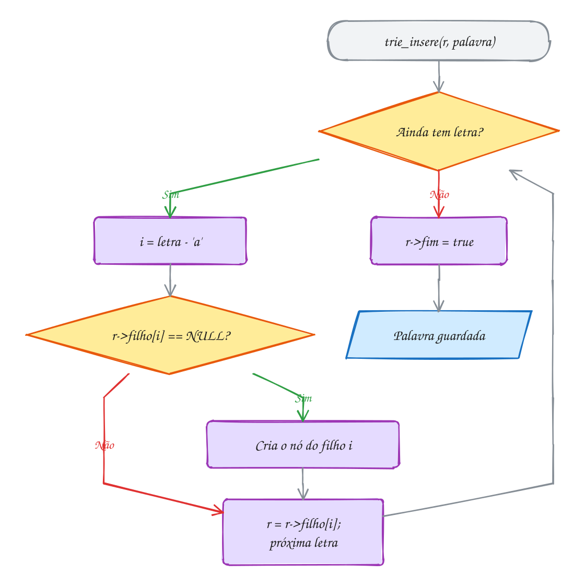
Exemplo A293 · Quanto custa uma trie
#include <stdio.h>
#include <string.h>
#include "0147-trie.h"
// conta os ponteiros de filho que estão em NULL (vagas sem uso)
int nulos(const NoTrie *r) {
int total = 0;
for (int i = 0; i < TRIE_LETRAS; i++) {
if (r->filho[i] == NULL) {
total++;
} else {
total += nulos(r->filho[i]);
}
}
return total;
}
int main(void) {
const char *feira[] = {"alface", "alho", "abacate", "abacaxi", "banana", "batata",
"beterraba", "cebola", "cenoura", "chuchu", "couve", "laranja",
"limao", "mamao", "manga", "maracuja", "melancia", "milho",
"tomate", "uva", "Pera", "caqui!"};
int n = sizeof feira / sizeof feira[0];
NoTrie *t = trie_cria();
int aceitas = 0;
size_t letras = 0;
for (int i = 0; i < n; i++) {
if (trie_insere(t, feira[i])) {
aceitas++;
letras += strlen(feira[i]);
} else {
printf("recusada: %s (só a-z)\n", feira[i]);
}
}
int nos = trie_nos(t);
printf("%d palavras, %zu letras no total\n", aceitas, letras);
printf("trie: %d nós x %zu bytes = %zu bytes\n", nos, sizeof(NoTrie), nos * sizeof(NoTrie));
printf("as mesmas palavras em strings: %zu bytes (letras + um '\\0' cada)\n",
letras + aceitas);
printf("ponteiros em NULL: %d de %d (%.1f%%)\n", nulos(t), nos * TRIE_LETRAS,
100.0 * nulos(t) / (nos * TRIE_LETRAS));
trie_libera(t);
return 0;
}
// Saída:
// recusada: Pera (só a-z)
// recusada: caqui! (só a-z)
// 20 palavras, 121 letras no total
// trie: 100 nós x 216 bytes = 21600 bytes
// as mesmas palavras em strings: 141 bytes (letras + um '\0' cada)
// ponteiros em NULL: 2501 de 2600 (96.2%)
gcc ~/LPEDC/material/A293.c ~/LPEDC/material/0147-trie.c -o ~/LPEDC/material/A293 && ~/LPEDC/material/A293
Exemplo A294 · A trie ordena e acha o prefixo comum
#include <stdio.h>
#include "0147-trie.h"
// quantos filhos o nó tem e, em *unico, o índice do último achado
int filhos(const NoTrie *n, int *unico) {
int qtd = 0;
for (int i = 0; i < TRIE_LETRAS; i++) {
if (n->filho[i] != NULL) {
qtd++;
*unico = i;
}
}
return qtd;
}
// maior prefixo comum a TODAS as palavras: desce enquanto o caminho não se
// divide (um filho só) e nenhuma palavra termina no meio do caminho
void prefixo_comum(const NoTrie *r, char saida[]) {
int k = 0, i = 0;
while (!r->fim && filhos(r, &i) == 1 && k < TRIE_MAX - 1) {
saida[k++] = (char)('a' + i);
r = r->filho[i];
}
saida[k] = '\0';
}
int main(void) {
const char *obra[] = {"pedreiro", "pedra", "pedregulho", "pedrada", "pedrisco"};
NoTrie *t = trie_cria();
for (int i = 0; i < 5; i++) {
trie_insere(t, obra[i]);
}
printf("Em ordem alfabética:");
trie_autocompleta(t, "", 100); // prefixo vazio: a trie inteira
char pc[TRIE_MAX];
prefixo_comum(t, pc);
printf("\nPrefixo comum: \"%s\"\n", pc);
trie_insere(t, "pe"); // uma palavra curta corta o prefixo comum
prefixo_comum(t, pc);
printf("Com \"pe\" no dicionário: \"%s\"\n", pc);
trie_insere(t, "areia"); // outra letra inicial: não sobra prefixo
prefixo_comum(t, pc);
printf("Com \"areia\" também: \"%s\"\n", pc);
trie_libera(t);
return 0;
}
// Saída:
// Em ordem alfabética: pedra pedrada pedregulho pedreiro pedrisco
// Prefixo comum: "pedr"
// Com "pe" no dicionário: "pe"
// Com "areia" também: ""
gcc ~/LPEDC/material/A294.c ~/LPEDC/material/0147-trie.c -o ~/LPEDC/material/A294 && ~/LPEDC/material/A294
Exercício E878 · ★☆☆
O terminal completa comandos com a tecla Tab. Guarde estes comandos numa trie (trie.h): cd, cat, chmod, chown, ls, less, mkdir, man. Escreva classifica(r, texto), que devolve uma de três mensagens: "comando" (o texto é um comando inteiro), "só começo de comando" (algum comando começa assim, mas o texto não é um) ou "não está". Teste, nesta ordem, com:
cat ch le less rm c mkdirs
Saída esperada:
cat comando
ch só começo de comando
le só começo de comando
less comando
rm não está
c só começo de comando
mkdirs não está
gcc ~/LPEDC/material/E878.c ~/LPEDC/material/0147-trie.c -o ~/LPEDC/material/E878 && ~/LPEDC/material/E878
Exercício E879 · ★★☆
Conte quantas vezes cada palavra aparece num texto com uma trie em que o nó guarda um contador (int qtd) no lugar do bool fim. Defina o struct NoFreq (26 filhos e qtd) e escreva: - conta(r, p, tam): soma 1 na palavra de tam letras que começa em p (o texto
não tem '\0' depois de cada palavra, por isso o tam);
com a contagem e conta quantas palavras diferentes existem;
O texto é "o rato roeu a roupa do rei de roma o rei riu da roupa".
Saída esperada:
a 1
da 1
de 1
do 1
o 2
rato 1
rei 2
riu 1
roeu 1
roma 1
roupa 2
14 palavras, 11 diferentes
gcc ~/LPEDC/material/E879.c ~/LPEDC/material/0147-trie.c -o ~/LPEDC/material/E879 && ~/LPEDC/material/E879
Exercício E880 · ★★☆
Guarde estes bichos do zoológico numa trie (trie.h): gato, girafa, guaxinim, hipopotamo, jacare, onca, ornitorrinco, rinoceronte, tatu, tamandua, orangotango. Escreva duas funções que percorrem a trie montando a palavra num buffer: - maior_palavra(n, buf, nivel, maior): copia para maior a palavra mais
comprida (no empate, a primeira em ordem alfabética);
letras, sem descer além do nível alvo.
Mostre a maior palavra e as de 4, 6 e 11 letras.
Saída esperada:
maior: ornitorrinco (12 letras)
com 4 letras: gato onca tatu
com 6 letras: girafa jacare
com 11 letras: orangotango rinoceronte
gcc ~/LPEDC/material/E880.c ~/LPEDC/material/0147-trie.c -o ~/LPEDC/material/E880 && ~/LPEDC/material/E880
Exercício E882 · ★★★
O TAD (trie.h) não sabe tirar palavras. Escreva bool remove_palavra(NoTrie *n, const char *p, bool *tirou), que desmarca o fim da palavra e libera, de baixo para cima, os nós que ficarem inúteis (sem fim e sem filhos); os nós que outra palavra ainda usa ficam. Em *tirou, diz se a palavra estava lá. Devolve true se n ficou inútil.
Insira sol, sola, solado, solteiro e sal. Mostre o início e, depois de tirar cada palavra de solado, so, sol, solteiro, sal e sola, o tamanho da trie (trie_nos) e as palavras que sobram (trie_autocompleta com prefixo "").
Saída esperada:
início | nós: 14 | palavras: sal sol sola solado solteiro
tira solado: tirou | nós: 12 | sobram: sal sol sola solteiro
tira so: não estava | nós: 12 | sobram: sal sol sola solteiro
tira sol: tirou | nós: 12 | sobram: sal sola solteiro
tira solteiro: tirou | nós: 7 | sobram: sal sola
tira sal: tirou | nós: 5 | sobram: sola
tira sola: tirou | nós: 1 | sobram:
gcc ~/LPEDC/material/E882.c ~/LPEDC/material/0147-trie.c -o ~/LPEDC/material/E882 && ~/LPEDC/material/E882
Numa turma, quem se conhece, mesmo que só como "amigo de amigo", cai no mesmo sorteio de amigo secreto. As amizades chegam aos poucos, uma por vez, e a qualquer momento alguém pergunta: "Ana e Duda caem no mesmo sorteio?". Você precisa responder rápido e continuar aceitando amizades novas.
O que está em jogo são conjuntos disjuntos: grupos de elementos que não
se misturam, em que cada elemento pertence a exatamente um grupo (CORMEN et
al., 2024, cap. 19). A estrutura que cuida deles oferece duas operações. A
operação acha(x) devolve o representante do grupo de x, um elemento
escolhido para responder pelo grupo inteiro. A operação une(a, b) junta
o grupo de a com o grupo de b num só. A pergunta do sorteio vira uma
comparação: dois elementos estão no mesmo grupo se acha devolve o mesmo
representante para os dois.
O union-find guarda cada grupo como uma árvore, e todas as árvores, a
floresta, cabem num vetor só. A posição pai[x] diz quem é o pai de x. A
raiz é quem aponta para si mesma (pai[x] == x), e ela é o representante.
Assim, acha(x) sobe de pai em pai até a raiz, e une(a, b) acha as duas
raízes e pendura uma na outra (SEDGEWICK; WAYNE, 2011). No começo, cada
pessoa é um grupo sozinho: pai[x] = x para todo x.
Do jeito ingênuo, pendurando sempre a primeira raiz na segunda, a árvore
pode virar uma fila comprida, e acha passa a custar O(n). Dois truques
resolvem isso.
O primeiro é a união por tamanho. Guarde, em tam[raiz], quantos
elementos tem cada grupo, e na união pendure a raiz do grupo menor na do
maior. Por que isso segura a altura? Um elemento só desce um nível quando o
grupo dele é o menor da união, e então o grupo resultante tem pelo menos o
dobro do tamanho. Um grupo só pode dobrar log₂ n vezes antes de passar de
n, então nenhum elemento desce mais que log₂ n níveis (LINTZMAYER; MOTA,
2023).
O segundo é a compressão de caminho. Quando acha(x) sobe até a raiz,
ele já sabe a resposta para todos os nós do caminho. Então, antes de
devolver, faz cada um desses nós apontar direto para a raiz. A próxima
consulta a qualquer um deles dá um passo só. Isso tem uma consequência no
código: consultar modifica o vetor pai, e por isso acha não pode
receber a estrutura como const.
Com os dois truques juntos, uma sequência de m operações custa O(m · α(n)), em que α é o inverso da função de Ackermann, uma função que cresce tão devagar que não passa de 4 para nenhum n que caiba num computador (TARJAN, 1975). Na prática, cada operação custa O(1) amortizado (assunto 0116).
O Cormen chama as operações de MAKE-SET (criar um grupo de um elemento só),
FIND-SET (o acha) e UNION (o une). No lugar do tamanho, ele usa a
união por posto (rank): cada raiz guarda um limite superior da altura
da sua árvore, que só cresce 1 quando duas raízes de mesmo posto se juntam.
A garantia é a mesma. O algoritmo de Kruskal (0152) usa essa estrutura para
saber se uma aresta fecha um ciclo (CORMEN et al., 2024, cap. 19).
[!WARNING] O representante é a raiz.
pai[a] = barranca oado grupo; o certo épai[acha(a)] = acha(b). Testarpai[a] == pai[b]falha com mais de um nível: o teste éacha(a) == acha(b). Etam[x]só vale na raiz.
Oito colegas de uma turma, de 0 (Ana) a 7 (Hugo), e sete amizades: quem se conhece cai no mesmo sorteio de amigo secreto. Sobram dois grupos, e Duda e Hugo ficam a dois passos da raiz até as perguntas comprimirem o caminho:
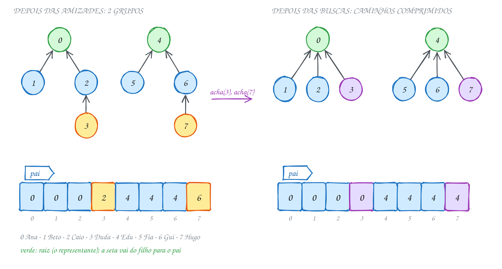
uf_acha e uf_une, em uniao.c:
int uf_acha(UF *u, int x) {
int raiz = x;
while (u->pai[raiz] != raiz) { // sobe até a raiz
raiz = u->pai[raiz];
}
while (u->pai[x] != raiz) { // compressão: todo mundo do caminho
int prox = u->pai[x]; // passa a apontar direto para a raiz
u->pai[x] = raiz;
x = prox;
}
return raiz;
}
bool uf_une(UF *u, int a, int b) {
int ra = uf_acha(u, a);
int rb = uf_acha(u, b);
if (ra == rb) {
return false; // já estavam juntos
}
if (u->tam[ra] < u->tam[rb]) { // ra fica sendo a raiz do grupo maior
int t = ra;
ra = rb;
rb = t;
}
u->pai[rb] = ra; // a raiz do menor vira filha da raiz do maior
u->tam[ra] += u->tam[rb];
u->grupos--;
return true;
}
O cliente registra as amizades e mostra pai depois de cada uma:
#include <stdio.h>
#include "uniao.h"
int main(void) {
const char *nome[] = {"Ana", "Beto", "Caio", "Duda", "Edu", "Fia", "Gui", "Hugo"};
int amizades[][2] = {{0, 1}, {2, 3}, {4, 5}, {1, 3}, {6, 7}, {5, 7}, {0, 2}};
UF *turma = uf_cria(8);
for (int i = 0; i < 7; i++) {
int a = amizades[i][0], b = amizades[i][1];
bool novo = uf_une(turma, a, b);
printf("%s e %s: %s | grupos: %d | ", nome[a], nome[b],
novo ? "juntou" : "já estavam", uf_grupos(turma));
uf_mostra(turma);
}
printf("Ana e Duda se conhecem? %s\n", uf_juntos(turma, 0, 3) ? "sim" : "não");
printf("Caio e Hugo se conhecem? %s\n", uf_juntos(turma, 2, 7) ? "sim" : "não");
printf("Grupo do Edu: %d pessoas\n", uf_tamanho(turma, 4));
printf("Depois das buscas, ");
uf_mostra(turma);
uf_libera(turma);
return 0;
}
// Saída:
// Ana e Beto: juntou | grupos: 7 | pai: 0 0 2 3 4 5 6 7
// Caio e Duda: juntou | grupos: 6 | pai: 0 0 2 2 4 5 6 7
// Edu e Fia: juntou | grupos: 5 | pai: 0 0 2 2 4 4 6 7
// Beto e Duda: juntou | grupos: 4 | pai: 0 0 0 2 4 4 6 7
// Gui e Hugo: juntou | grupos: 3 | pai: 0 0 0 2 4 4 6 6
// Fia e Hugo: juntou | grupos: 2 | pai: 0 0 0 2 4 4 4 6
// Ana e Caio: já estavam | grupos: 2 | pai: 0 0 0 2 4 4 4 6
// Ana e Duda se conhecem? sim
// Caio e Hugo se conhecem? não
// Grupo do Edu: 4 pessoas
// Depois das buscas, pai: 0 0 0 0 4 4 4 4
No empate de tamanhos, a raiz de a continua raiz. O fluxograma segue uf_une
em "Fia e Hugo": as raízes 4 (Edu) e 6 (Gui) têm grupos de 2, e o Gui, com o
Hugo, vira filho do Edu:
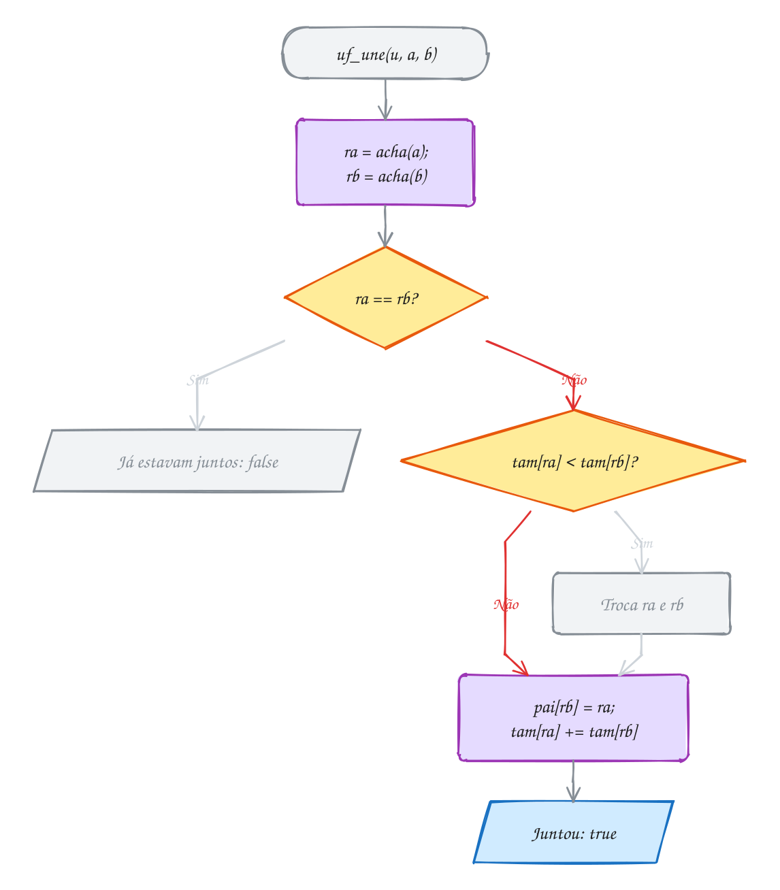
Exemplo A295 · Sem os dois truques, a árvore vira lista
#include <stdbool.h>
#include <stdio.h>
#include <stdlib.h>
#define N 10000
int pai[N], tam[N];
long passos; // quantas vezes alguém subiu de um nó para o pai
void inicia(void) {
for (int i = 0; i < N; i++) {
pai[i] = i;
tam[i] = 1;
}
passos = 0;
}
int acha(int x, bool comprime) {
int raiz = x;
while (pai[raiz] != raiz) {
raiz = pai[raiz];
passos++;
}
while (comprime && pai[x] != raiz) {
int prox = pai[x];
pai[x] = raiz;
x = prox;
}
return raiz;
}
void une(int a, int b, bool por_tamanho, bool comprime) {
int ra = acha(a, comprime), rb = acha(b, comprime);
if (ra == rb) {
return;
}
if (por_tamanho && tam[ra] < tam[rb]) {
int t = ra;
ra = rb;
rb = t;
}
if (por_tamanho) {
pai[rb] = ra; // o menor vai para baixo do maior
tam[ra] += tam[rb];
} else {
pai[ra] = rb; // ingênuo: o grupo de a vai sempre para baixo do de b
}
}
int profundidade_maxima(void) {
int maior = 0;
for (int i = 0; i < N; i++) {
int d = 0;
for (int x = i; pai[x] != x; x = pai[x]) {
d++;
}
if (d > maior) {
maior = d;
}
}
return maior;
}
void testa(const char *nome, bool por_tamanho, bool comprime) {
inicia();
for (int i = 1; i < N; i++) {
une(0, i, por_tamanho, comprime); // o 0 chama todo mundo para o grupo dele
}
long nas_unioes = passos;
int prof = profundidade_maxima();
passos = 0;
for (int i = 0; i < N; i++) {
acha(i, comprime); // depois, cada um pergunta quem é o representante
}
printf("%s passos nas uniões: %9ld | profundidade: %4d | passos nas buscas: %8ld\n",
nome, nas_unioes, prof, passos);
}
int main(void) {
testa("ingênuo: ", false, false);
testa("só por tamanho: ", true, false);
testa("ingênuo + compressão:", false, true);
return 0;
}
// Saída:
// ingênuo: passos nas uniões: 49985001 | profundidade: 9999 | passos nas buscas: 49995000
// só por tamanho: passos nas uniões: 0 | profundidade: 1 | passos nas buscas: 9999
// ingênuo + compressão: passos nas uniões: 19995 | profundidade: 9998 | passos nas buscas: 19997
gcc ~/LPEDC/material/A295.c ~/LPEDC/material/0148-uniao.c -o ~/LPEDC/material/A295 && ~/LPEDC/material/A295
Exemplo A296 · As ilhas do mapa
#include <stdio.h>
#include "0148-uniao.h"
#define LIN 5
#define COL 8
// cada célula (i, j) vira o elemento i * COL + j do union-find
int main(void) {
const char *mapa[LIN] = {
"##..#...",
"#...##..",
"..#..#.#",
".###...#",
"....##.#",
};
UF *u = uf_cria(LIN * COL);
int terra = 0;
for (int i = 0; i < LIN; i++) {
for (int j = 0; j < COL; j++) {
if (mapa[i][j] != '#') {
continue;
}
terra++;
// basta olhar para a direita e para baixo: as outras duas
// direções já foram vistas pelas células anteriores
if (j + 1 < COL && mapa[i][j + 1] == '#') {
uf_une(u, i * COL + j, i * COL + j + 1);
}
if (i + 1 < LIN && mapa[i + 1][j] == '#') {
uf_une(u, i * COL + j, (i + 1) * COL + j);
}
}
}
// os grupos do union-find contam também as células de água (sozinhas)
int agua = LIN * COL - terra;
printf("Ilhas: %d\n", uf_grupos(u) - agua);
int maior = 0, onde = 0;
for (int c = 0; c < LIN * COL; c++) {
if (mapa[c / COL][c % COL] == '#' && uf_tamanho(u, c) > maior) {
maior = uf_tamanho(u, c);
onde = c;
}
}
printf("Maior ilha: %d células, uma delas na linha %d, coluna %d\n",
maior, onde / COL, onde % COL);
printf("(0, 4) e (2, 5) na mesma ilha? %s\n",
uf_juntos(u, 0 * COL + 4, 2 * COL + 5) ? "sim" : "não");
printf("(2, 2) e (4, 4) na mesma ilha? %s\n",
uf_juntos(u, 2 * COL + 2, 4 * COL + 4) ? "sim" : "não");
uf_libera(u);
return 0;
}
// Saída:
// Ilhas: 5
// Maior ilha: 4 células, uma delas na linha 0, coluna 4
// (0, 4) e (2, 5) na mesma ilha? sim
// (2, 2) e (4, 4) na mesma ilha? não
gcc ~/LPEDC/material/A296.c ~/LPEDC/material/0148-uniao.c -o ~/LPEDC/material/A296 && ~/LPEDC/material/A296
Exercício E883 · ★☆☆
Depois da enchente, só algumas estradas entre sete cidades continuam abertas. Use o TAD (uniao.h). As cidades, de 0 a 6, são Araras, Bauru, Catanduva, Dourado, Embu, Franca e Garça. As estradas abertas ligam os pares 0-2, 1-5, 2-3, 5-6 e 0-3. Una as cidades de cada estrada, mostre quantos grupos de cidades ligadas existem e responda se dá para ir (passando por outras, se preciso) de 0 a 3, de 1 a 6, de 3 a 5 e de 4 a 4.
Saída esperada:
Grupos de cidades ligadas: 3
Araras -> Dourado: dá para ir
Bauru -> Garça: dá para ir
Dourado -> Franca: não dá para ir
Embu -> Embu: dá para ir
gcc ~/LPEDC/material/E883.c ~/LPEDC/material/0148-uniao.c -o ~/LPEDC/material/E883 && ~/LPEDC/material/E883
Exercício E885 · ★★☆
O técnico ligou os 7 computadores do escritório (0 a 6) com 9 cabos, nesta ordem:
0-1 1-2 3-4 2-0 4-5 5-6 1-4 6-3 2-5
Um cabo é redundante quando liga dois computadores que JÁ conversavam por outros cabos (ele fecha um ciclo). Com o TAD (uniao.h), mostre cada cabo redundante, quantos cabos bastariam e se a rede ficou toda ligada.
Saída esperada:
cabo 4 (2-0) é redundante
cabo 8 (6-3) é redundante
cabo 9 (2-5) é redundante
3 cabos redundantes; 6 cabos bastam; rede toda ligada
gcc ~/LPEDC/material/E885.c ~/LPEDC/material/0148-uniao.c -o ~/LPEDC/material/E885 && ~/LPEDC/material/E885
Exercício E886 · ★★☆
Na pelada de quinta, quem já jogou junto fica no mesmo time, e "jogou com quem jogou com" também conta. Os nove jogadores, de 0 a 8, são Alex, Bia, Cadu, Davi, Eli, Fabi, Gabo, Hana e Ivo. As duplas que já jogaram juntas:
0-4 2-7 4-8 1-5 7-3 8-0
Com o TAD (uniao.h), una as duplas e liste cada time com seus jogadores e o tamanho. Os times saem na ordem do seu primeiro jogador (o de menor número), e os jogadores de cada time, em ordem de número.
Saída esperada:
Time 1 (3): Alex Eli Ivo
Time 2 (2): Bia Fabi
Time 3 (3): Cadu Davi Hana
Time 4 (1): Gabo
gcc ~/LPEDC/material/E886.c ~/LPEDC/material/0148-uniao.c -o ~/LPEDC/material/E886 && ~/LPEDC/material/E886
Exercício E888 · ★★★
Teste de infiltração. Uma placa de 5x5 quadradinhos começa toda tapada, e o técnico fura um quadradinho por vez, na ordem c = (i * 9 + 7) % 25 para i = 0, 1, 2... (c = linha * 5 + coluna). A água jogada em cima passa para baixo quando existe um caminho de quadradinhos furados, vizinhos em cima, embaixo ou dos lados, da linha 0 até a linha 4. Descubra em qual furo a água passa e mostre a placa nesse momento (# furado, . tapado).
Saída esperada:
A água passou no passo 13 (13 de 25 abertas)
#.#.#
.##.#
.#.#.
##.#.
#.#..
gcc ~/LPEDC/material/E888.c ~/LPEDC/material/0148-uniao.c -o ~/LPEDC/material/E888 && ~/LPEDC/material/E888
O secretário da associação do bairro quer um programa que leia o aviso da semana, como "o onibus pasou" ou "a fiera da rua", aponte as palavras que não existem e sugira a correção. É um corretor ortográfico, e ele junta várias estruturas do curso.
Por baixo, o corretor faz duas perguntas ao dicionário, milhares de vezes por texto. A primeira é "esta palavra existe?", uma busca exata. A segunda é "quais palavras de verdade estão perto desta?". Perto, aqui, quer dizer a poucas edições de distância, no sentido do assunto 0142: tirar uma letra, pôr uma letra, trocar uma letra por outra ou trocar duas letras vizinhas de lugar. Essa última operação não estava na distância de Levenshtein, mas é o erro de digitação mais comum.
A segunda pergunta parece exigir comparar a palavra errada com o dicionário inteiro. O corretor faz o contrário: gera candidatos. Ele aplica à palavra errada todas as edições possíveis e pergunta, para cada resultado, se ele existe. Para "fiera", com 5 letras, são 5 jeitos de tirar uma letra, 4 de trocar duas vizinhas, 5 × 25 de trocar uma letra e 6 × 26 de pôr uma letra: 290 candidatos. Desses, só "feira" existe. A segunda pergunta virou 290 buscas exatas, e o custo delas depende de como o dicionário está guardado.
O dicionário fica numa trie (assunto 0147). Cada busca custa O(L), com L o tamanho da palavra, sem depender do tamanho do dicionário. E a trie tem uma vantagem extra para candidatos: ela descobre cedo que uma palavra não existe. Um candidato que começa com "fx" morre no segundo nó, porque nenhuma palavra começa assim (ZIVIANI, 2010, cap. 5).
Há outras opções para o dicionário. Uma tabela hash faz a busca exata em O(1) na média, calculando direto a posição da palavra. Uma BST faz em O(log n) comparações de string (SZWARCFITER; MARKENZON, 2010). O exemplo A297 monta as três com o mesmo dicionário de 2500 palavras de duas sílabas e faz 5000 buscas, metade de palavras que existem e metade de palavras que não existem. A tabela resume o que ele mede e o que cada estrutura sabe fazer:
| BST | Tabela hash | Trie | |
|---|---|---|---|
| custo da busca exata | 17,2 comparações de string | 1,3 comparação de string | 4 nós (o tamanho da palavra) |
| memória | 60 KB | 60 KB | 661 KB |
| palavras com um prefixo | dá, com um percurso por intervalo | não dá | desce até o prefixo e lista |
| ordem alfabética | percurso em ordem | não dá | percurso por letra |
| depende de n? | sim, log n | não (com fator de carga bom) | não |
Leia a tabela pela linha da memória. A trie de 84 palavras do exemplo deste assunto tem 239 nós de 216 bytes, cerca de 51 KB, e cada nó fica num ponto diferente do heap. Andar de nó em nó obriga o processador a buscar memória que não está no cache, a memória rápida perto dele. A hash lê poucas posições próximas e costuma vencer a trie na busca exata.
A trie ganha em tudo que envolve prefixo: autocompletar, listar em ordem alfabética e cortar candidatos que já nascem errados. A hash ganha na pergunta "existe?" pura. Por isso um corretor de verdade combina as duas.
[!WARNING]
cor_proximasó reconhece'a'a'z': maiúscula e acento viram separadores ("Hoje" sai "oje"; "pão" sai "p" e "o"). Ecor_sugereusa um vetor deCOR_MAX + 1posições, porque pôr uma letra aumenta a palavra.
O secretário da associação do bairro quer revisar o aviso da semana. São 18 palavras e cinco problemas: três erros com uma sugestão só, um "caa" que pode ser três palavras e um "esquina" certo, mas fora do dicionário de 84 palavras:
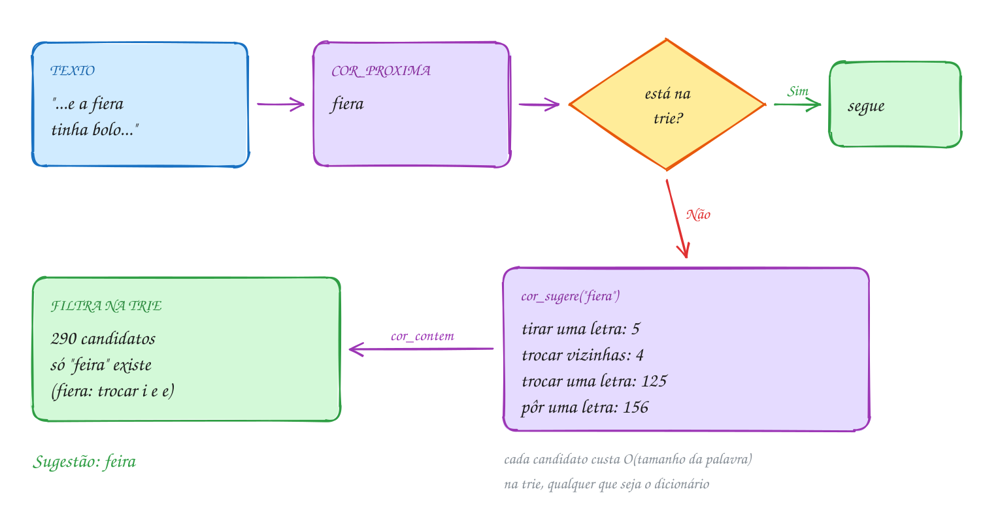
No miolo de cor_sugere, anota confere cada candidato na trie, descarta
repetidos e mantém a lista em ordem alfabética:
int cor_sugere(const NoC *d, const char *palavra, char sug[][COR_MAX], int max) {
int n = (int)strlen(palavra);
int qtd = 0;
char c[COR_MAX + 1];
if (n >= COR_MAX - 1) {
return 0;
}
for (int i = 0; i < n; i++) { // 1. tirar a letra i
memcpy(c, palavra, i);
strcpy(c + i, palavra + i + 1);
anota(d, c, sug, &qtd, max);
}
for (int i = 0; i + 1 < n; i++) { // 2. trocar as letras i e i + 1 de lugar
strcpy(c, palavra);
char t = c[i];
c[i] = c[i + 1];
c[i + 1] = t;
anota(d, c, sug, &qtd, max);
}
for (int i = 0; i < n; i++) { // 3. trocar a letra i por outra
strcpy(c, palavra);
for (char l = 'a'; l <= 'z'; l++) {
if (l != palavra[i]) {
c[i] = l;
anota(d, c, sug, &qtd, max);
}
}
}
for (int i = 0; i <= n; i++) { // 4. pôr uma letra na posição i
for (char l = 'a'; l <= 'z'; l++) {
memcpy(c, palavra, i);
c[i] = l;
strcpy(c + i + 1, palavra + i);
anota(d, c, sug, &qtd, max);
}
}
return qtd;
}
O programa do secretário:
#include <stdio.h>
#include "corretor.h"
int main(void) {
NoC *dic = cor_cria();
int n = cor_carrega_basico(dic);
printf("Dicionário: %d palavras em %d nós\n", n, cor_nos(dic));
const char *texto = "hoje o onibus pasou no ponto, e a fiera tinha bolo e cafe baratoo na caa da esquina.";
char palavra[COR_MAX], sug[5][COR_MAX];
int total = 0, erros = 0;
while (cor_proxima(&texto, palavra)) {
total++;
if (cor_contem(dic, palavra)) {
continue;
}
erros++;
int k = cor_sugere(dic, palavra, sug, 5);
printf("\"%s\"? Sugestões:", palavra);
for (int i = 0; i < k; i++) {
printf(" %s", sug[i]);
}
printf(k == 0 ? " nenhuma\n" : "\n");
}
printf("%d palavras, %d para revisar\n", total, erros);
cor_libera(dic);
return 0;
}
// Saída:
// Dicionário: 84 palavras em 239 nós
// "pasou"? Sugestões: passou
// "fiera"? Sugestões: feira
// "baratoo"? Sugestões: barato
// "caa"? Sugestões: cama cara casa
// "esquina"? Sugestões: nenhuma
// 18 palavras, 5 para revisar
O fluxograma é um laço sobre as palavras: só as desconhecidas pagam o preço dos candidatos. O caminho verde é o de "fiera", seguido do fim do texto:
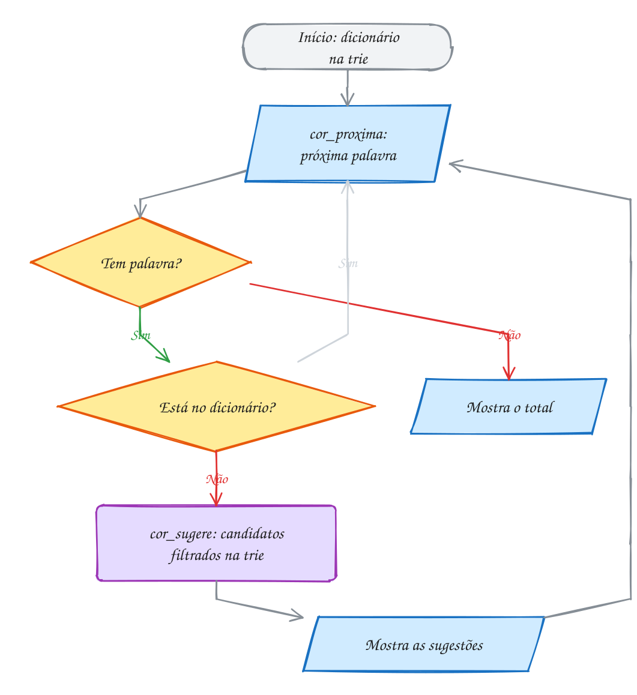
Exemplo A297 · Trie, hash e BST no mesmo dicionário
#include <stdio.h>
#include <stdlib.h>
#include <string.h>
#include "0149-corretor.h"
// dicionário sintético: as 2500 palavras de duas sílabas (ba, be, ..., zu)
#define N 2500
#define BALDES 2503 // primo, perto de N
long passos; // comparações de string (BST e hash) ou nós visitados (trie)
// ---- BST de strings ----
typedef struct NoS {
char p[8];
struct NoS *esq, *dir;
} NoS;
NoS *bst_poe(NoS *r, const char *p) {
if (r == NULL) {
NoS *n = malloc(sizeof(NoS));
if (n == NULL) {
exit(1);
}
strcpy(n->p, p);
n->esq = n->dir = NULL;
return n;
}
int c = strcmp(p, r->p);
if (c < 0) {
r->esq = bst_poe(r->esq, p);
} else if (c > 0) {
r->dir = bst_poe(r->dir, p);
}
return r;
}
int bst_tem(const NoS *r, const char *p) {
while (r != NULL) {
passos++;
int c = strcmp(p, r->p);
if (c == 0) {
return 1;
}
r = c < 0 ? r->esq : r->dir;
}
return 0;
}
int bst_altura(const NoS *r) {
if (r == NULL) {
return -1;
}
int e = bst_altura(r->esq), d = bst_altura(r->dir);
return 1 + (e > d ? e : d);
}
void bst_solta(NoS *r) {
if (r != NULL) {
bst_solta(r->esq);
bst_solta(r->dir);
free(r);
}
}
// ---- tabela hash com encadeamento ----
typedef struct NoH {
char p[8];
struct NoH *prox;
} NoH;
unsigned espalha(const char *p) { // djb2
unsigned h = 5381;
for (; *p != '\0'; p++) {
h = h * 33 + (unsigned char)*p;
}
return h % BALDES;
}
void hash_poe(NoH *t[], const char *p) {
NoH *n = malloc(sizeof(NoH));
if (n == NULL) {
exit(1);
}
strcpy(n->p, p);
unsigned b = espalha(p);
n->prox = t[b];
t[b] = n;
}
int hash_tem(NoH *t[], const char *p) {
for (const NoH *n = t[espalha(p)]; n != NULL; n = n->prox) {
passos++;
if (strcmp(n->p, p) == 0) {
return 1;
}
}
return 0;
}
// ---- trie (do TAD): conta os nós visitados ----
int trie_tem(const NoC *d, const char *p) {
for (; *p != '\0' && d != NULL; p++) {
passos++;
d = d->filho[*p - 'a'];
}
return d != NULL && d->fim;
}
int main(void) {
const char *cons = "bcdfglmprz", *vog = "aeiou";
static char pal[N][8];
for (int i = 0; i < N; i++) { // sílaba 1 = i / 50, sílaba 2 = i % 50
int s1 = i / 50, s2 = i % 50;
snprintf(pal[i], 8, "%c%c%c%c", cons[s1 / 5], vog[s1 % 5], cons[s2 / 5], vog[s2 % 5]);
}
// embaralha a ordem de inserção (Fisher-Yates com um gerador fixo), senão
// a BST receberia as palavras em ordem alfabética e viraria uma lista
static int ordem[N];
unsigned x = 2024;
for (int i = 0; i < N; i++) {
ordem[i] = i;
}
for (int i = N - 1; i > 0; i--) {
x = x * 1103515245u + 12345u;
int j = (int)((x >> 8) % (unsigned)(i + 1));
int t = ordem[i];
ordem[i] = ordem[j];
ordem[j] = t;
}
NoS *bst = NULL;
static NoH *tabela[BALDES];
NoC *trie = cor_cria();
for (int i = 0; i < N; i++) {
const char *p = pal[ordem[i]];
bst = bst_poe(bst, p);
hash_poe(tabela, p);
cor_insere(trie, p);
}
// 2500 buscas que acham e 2500 que não acham (troca a última vogal por 'x')
long pb = 0, ph = 0, pt = 0;
for (int i = 0; i < N; i++) {
char falsa[8];
strcpy(falsa, pal[i]);
falsa[3] = 'x';
passos = 0; bst_tem(bst, pal[i]); bst_tem(bst, falsa); pb += passos;
passos = 0; hash_tem(tabela, pal[i]); hash_tem(tabela, falsa); ph += passos;
passos = 0; trie_tem(trie, pal[i]); trie_tem(trie, falsa); pt += passos;
}
int maior_balde = 0;
for (int b = 0; b < BALDES; b++) {
int k = 0;
for (const NoH *n = tabela[b]; n != NULL; n = n->prox) {
k++;
}
maior_balde = k > maior_balde ? k : maior_balde;
}
printf("%d palavras, %d buscas\n", N, 2 * N);
printf("BST: %4.1f comparações de string por busca | altura %d | %zu bytes\n",
(double)pb / (2 * N), bst_altura(bst), N * sizeof(NoS));
printf("hash: %4.1f comparações de string por busca | maior balde %d | %zu bytes\n",
(double)ph / (2 * N), maior_balde, N * sizeof(NoH) + BALDES * sizeof(NoH *));
printf("trie: %4.1f nós visitados por busca | %d nós | %zu bytes\n",
(double)pt / (2 * N), cor_nos(trie), cor_nos(trie) * sizeof(NoC));
bst_solta(bst);
for (int b = 0; b < BALDES; b++) {
while (tabela[b] != NULL) {
NoH *prox = tabela[b]->prox;
free(tabela[b]);
tabela[b] = prox;
}
}
cor_libera(trie);
return 0;
}
// Saída:
// 2500 palavras, 5000 buscas
// BST: 17.2 comparações de string por busca | altura 29 | 60000 bytes
// hash: 1.3 comparações de string por busca | maior balde 5 | 60024 bytes
// trie: 4.0 nós visitados por busca | 3061 nós | 661176 bytes
gcc ~/LPEDC/material/A297.c ~/LPEDC/material/0149-corretor.c -o ~/LPEDC/material/A297 && ~/LPEDC/material/A297
Exemplo A298 · O corretor que aprende palavras novas
#include <stdio.h>
#include "0149-corretor.h"
// Lê o texto linha por linha. Uma linha que começa com '+' ensina palavras
// novas ao dicionário; as outras são conferidas.
//
// printf 'hoje tem fieira na rua\n+ pastel esquina\na fiera da esquina tem pastel\n' | ~/LPEDC/rodar 22-arvores-avancadas/0149-juntando-tudo/A298.c
int main(void) {
NoC *dic = cor_cria();
cor_carrega_basico(dic);
int nos_antes = cor_nos(dic);
char linha[256], palavra[COR_MAX], sug[3][COR_MAX];
int num = 0, aprendidas = 0;
while (fgets(linha, sizeof linha, stdin) != NULL) {
num++;
const char *p = linha;
if (linha[0] == '+') {
int antes = aprendidas;
while (cor_proxima(&p, palavra)) {
if (!cor_contem(dic, palavra) && cor_insere(dic, palavra)) {
aprendidas++;
}
}
printf("linha %d: aprendi %d palavra(s)\n", num, aprendidas - antes);
continue;
}
int erros = 0;
while (cor_proxima(&p, palavra)) {
if (cor_contem(dic, palavra)) {
continue;
}
erros++;
int k = cor_sugere(dic, palavra, sug, 3);
printf("linha %d: \"%s\"?", num, palavra);
for (int i = 0; i < k; i++) {
printf(" %s", sug[i]);
}
printf("\n");
}
if (erros == 0) {
printf("linha %d: tudo certo\n", num);
}
}
printf("Palavras aprendidas: %d (a trie foi de %d para %d nós)\n",
aprendidas, nos_antes, cor_nos(dic));
cor_libera(dic);
return 0;
}
// Saída:
// linha 1: "fieira"? feira
// linha 2: aprendi 2 palavra(s)
// linha 3: "fiera"? feira
// Palavras aprendidas: 2 (a trie foi de 239 para 247 nós)
gcc ~/LPEDC/material/A298.c ~/LPEDC/material/0149-corretor.c -o ~/LPEDC/material/A298 && ~/LPEDC/material/A298
Exercício E889 · ★☆☆
Use o TAD do corretor (corretor.h) para conferir este recado da escola:
a escola da cidade tem muitos alunos e um onibus amarelo na porta
Separe o texto em palavras com cor_proxima, mostre as que não estão no dicionário básico (cor_carrega_basico) e conte quantas são, de quantas no total.
Saída esperada:
desconhecidas: muitos alunos
2 de 13 palavras fora do dicionário
gcc ~/LPEDC/material/E889.c ~/LPEDC/material/0149-corretor.c -o ~/LPEDC/material/E889 && ~/LPEDC/material/E889
Exercício E891 · ★★☆
Quando uma palavra está longe demais de tudo, as sugestões a uma edição de distância não acham nada. Outra pista é o começo da palavra. Com o dicionário básico (corretor.h), escreva pelo_prefixo(d, palavra, max): desça na trie enquanto as letras da palavra existirem, mostre o maior prefixo em comum e sugira até max palavras do dicionário que começam com ele, em ordem alfabética. Teste com esquina, cafezinho, mercadinho, portaria e xis.
Saída esperada:
esquina: prefixo "es" | escola
cafezinho: prefixo "cafe" | cafe
mercadinho: prefixo "mercad" | mercado
portaria: prefixo "porta" | porta portao
xis: prefixo "" | nenhuma
gcc ~/LPEDC/material/E891.c ~/LPEDC/material/0149-corretor.c -o ~/LPEDC/material/E891 && ~/LPEDC/material/E891
Exercício E892 · ★★☆
O revisor quer um relatório das palavras fora do dicionário básico (corretor.h) deste texto, em ordem alfabética, com quantas vezes cada uma apareceu:
hoje a fiera tem pao barato e cafe barato mas ontem a fiera tinha pao
caro e o onibus pasou cedo
Guarde as desconhecidas numa BST de strings (assunto 0099) com um contador no nó: palavra repetida soma 1. No fim, um percurso em ordem imprime o relatório e conta as palavras diferentes e as ocorrências.
Saída esperada:
cedo: 1
fiera: 2
mas: 1
pasou: 1
4 palavras diferentes, 5 ocorrências
gcc ~/LPEDC/material/E892.c ~/LPEDC/material/0149-corretor.c -o ~/LPEDC/material/E892 && ~/LPEDC/material/E892
Exercício E894 · ★★★
Sugira palavras a até DUAS edições (distância de Levenshtein, assunto 0142) sem calcular a distância contra cada palavra do dicionário. Desça na trie do dicionário básico (corretor.h) com uma DFS que leva a última linha da tabela da distância: cada nó acrescenta uma linha (a letra dele contra a palavra procurada). Se o menor valor da linha nova já passar de 2, corte o ramo. Escreva parecidas(d, alvo), que mostra, em ordem alfabética, as palavras a distância 2 ou menos, com a distância entre parênteses. Teste com carrro, jnaela, bolsa e mercadorias.
Saída esperada:
carrro: bairro(2) caro(2) carro(1)
jnaela: janela(2)
bolsa: boa(2) bola(1) bolo(2)
mercadorias: nenhuma
gcc ~/LPEDC/material/E894.c ~/LPEDC/material/0149-corretor.c -o ~/LPEDC/material/E894 && ~/LPEDC/material/E894
30 exercícios que misturam os assuntos do módulo, no ritmo da prova. Arquivos P2201.c a P2230.c, em material/; resoluções em _respostas/22-arvores-avancadas/lista/.
Exercício P2201 · ★☆☆ · Quantos níveis tem o organograma?
O organograma da prefeitura está numa árvore geral guardada como filho-esquerdo/irmão-direito: cada nó aponta para o PRIMEIRO filho e para o PRÓXIMO irmão. Complete altura(r), que devolve o número de níveis (uma árvore só com a raiz tem 1 nível; vazia, 0). O main já monta a árvore e mostra a resposta.
Prefeito
├── Saúde
│ ├── UBS Centro
│ └── UBS Norte
│ └── Farmácia
├── Educação
│ └── Creche
└── Obras
Saída esperada:
Níveis: 4
Resposta esperada: 4 níveis (Prefeito, Saúde, UBS Norte, Farmácia).
Exercício P2202 · ★☆☆ · Quem tem mais filhos
A árvore genealógica da família Saraiva está em filho-esquerdo/irmão- direito. Escreva do zero o struct, a montagem (a mesma do main da resposta, com as funções novo e filho) e a função mais_filhos(r, &max), que percorre a árvore toda e devolve o nó com mais filhos (no empate, o primeiro encontrado na pré-ordem). Mostre também quantos filhos cada pessoa tem, em pré-ordem, com recuo de 2 espaços por nível.
Raimundo: filhos Joana, Pedro, Rita
Joana: filhos Ana, Bruno
Pedro: filhos Caio, Davi, Elis, Fábio
Rita: filha Gabi
Elis: filha Helena
Saída esperada:
Raimundo (3)
Joana (2)
Ana (0)
Bruno (0)
Pedro (4)
Caio (0)
Davi (0)
Elis (1)
Helena (0)
Fábio (0)
Rita (1)
Gabi (0)
Mais filhos: Pedro, com 4
Resposta esperada: Pedro, com 4 filhos.
Exercício P2203 · ★☆☆ · Vermelho com filho vermelho
Na rubro-negra do Cormen (a clássica, não a esquerdista), cada NÓ é vermelho ou preto, e uma das regras é: um nó vermelho não tem filho vermelho. O programa abaixo monta à mão duas árvores (V é vermelho, P é preto) e chama sem_vv(r), que devia devolver 1 se a regra vale em toda a árvore e 0 se algum vermelho tem filho vermelho (mostrando qual). Complete sem_vv. As árvores estão escritas como raiz(esquerda, direita), com - no lugar de um filho vazio:
Árvore 1: 20P(10V(5P, 15P), 30V(25P, -))
Árvore 2: 20P(10P, 30V(25V, 40P))
Saída esperada:
Árvore 1:
regra vale
Árvore 2:
30 vermelho tem filho vermelho
regra quebrada
Resposta esperada: a árvore 1 vale; na 2, o 30 vermelho tem o filho 25 vermelho.
Exercício P2204 · ★☆☆ · A altura negra de cada caminho
Outra regra da rubro-negra: todo caminho de um nó até um NULL passa pelo MESMO número de nós pretos. Esse número, contado a partir da raiz, é a ALTURA NEGRA. Complete altura_negra(r): ela devolve a altura negra da árvore (NULL conta 0 aqui) ou -1 se dois caminhos discordam. O main testa as duas árvores (V vermelho, P preto, escritas como raiz(esquerda, direita), com - no lugar de um filho vazio) e mostra o resultado.
Árvore 1: 30P(15V(8P, 20P), 45P(-, 50V))
Árvore 2: 30P(15P(8P, -), 45P(40P, 50P))
Saída esperada:
Árvore 1: altura negra 2
Árvore 2: altura negra -1
Resposta esperada: 2 na árvore 1; -1 na 2 (pela esquerda do 15 são 3 pretos; pela direita do 15, só 2).
Exercício P2205 · ★☆☆ · Quantas páginas a busca lê
O cartório guarda os números de protocolo numa árvore B com grau mínimo t = 2 (cada nó tem de 1 a 3 chaves). Num disco, cada nó é uma PÁGINA, e ler uma página é o que custa caro. O programa abaixo já insere os protocolos 5, 10, 15, ..., 100. Escreva busca(x, k, &paginas): ela procura k a partir do nó x, conta cada nó visitado e devolve 1 se achou. Procure 40, 60, 42 e 100.
Saída esperada:
Protocolo 40: achado (páginas lidas: 1)
Protocolo 60: achado (páginas lidas: 2)
Protocolo 42: não existe (páginas lidas: 4)
Protocolo 100: achado (páginas lidas: 4)
Resposta esperada: o 40 está na raiz (1 página) e o 60 no nível de baixo (2); o 42 não existe e o 100 está numa folha: 4 páginas cada, o número de níveis da árvore.
Exercício P2206 · ★☆☆ · O começo que todas têm
O professor de português escreveu no quadro as palavras da família de "comer": comer, comida, comilão, comedor, comestível (sem acento, para a trie de 'a' a 'z': comer, comida, comilao, comedor, comestivel). Qual o MAIOR PREFIXO COMUM a todas? Escreva do zero uma trie (26 filhos e um bool fim por nó) e a função prefixo_comum(r, buf): desça a partir da raiz enquanto o nó tem EXATAMENTE um filho e não é fim de palavra, anotando as letras. Mostre o resultado para as duas listas do main.
Saída esperada:
comer, comida, comilao, comedor, comestivel: prefixo comum "com"
solar, sol, solteiro, soldado: prefixo comum "sol"
Resposta esperada: "com" para a primeira lista e "sol" para a segunda. Libere a trie no fim.
Exercício P2207 · ★☆☆ · As redes da comunidade
Na comunidade ribeirinha, 10 casas (0 a 9) estão ganhando internet por rádio, e cada enlace liga duas casas. Escreva do zero um union-find com UNIÃO POR POSTO (rank) e COMPRESSÃO DE CAMINHO: acha(x) devolve a raiz e pendura todo o caminho direto nela; une(a, b) liga a raiz de posto menor embaixo da de posto maior (no empate, a de b embaixo da de a, e o posto de a sobe 1). Processe os enlaces e mostre quantas redes separadas sobraram e as casas de cada uma.
Enlaces: 0-1 2-3 1-4 5-6 3-7 4-8 6-9 0-8
Saída esperada:
Redes: 3
{ 0 1 4 8 }
{ 2 3 7 }
{ 5 6 9 }
Resposta esperada: 3 redes: {0 1 4 8}, {2 3 7} e {5 6 9}.
Exercício P2208 · ★☆☆ · A torre que o posto não deixa crescer
O union-find abaixo é o ingênuo: une(a, b) pendura a raiz de a embaixo da raiz de b, sempre, e acha não comprime o caminho. Com as uniões une(0, 1), une(1, 2), ..., une(14, 15), a árvore vira uma fila de 16 andares. Estenda o programa: escreva une_posto(a, b), com união por POSTO (rank) e o mesmo acha sem compressão, rode as mesmas 15 uniões num segundo vetor de pais e mostre a profundidade máxima (em arestas) nas duas versões.
Saída esperada:
Sem posto: profundidade máxima 15
Com posto: profundidade máxima 1
Resposta esperada: 15 sem posto e 1 com posto. Com posto, a altura nunca passa de lg n, mesmo sem compressão.
Exercício P2209 · ★☆☆ · O trabalho escondido da rubro-negra
A rubro-negra esquerdista (assunto 0145) mantém o equilíbrio com rotações e inversões de cor. Quanto trabalho é isso? O programa abaixo tem a inserção completa. Instrumente-o: conte as rotações à esquerda, as rotações à direita e as inversões de cor ao inserir os códigos de 1 a 15, em ordem crescente (o pior caso de uma árvore de busca comum), e mostre também a altura final (em nós).
Saída esperada:
Raiz: 8
Rotações à esquerda: 11
Rotações à direita: 0
Inversões de cor: 11
Altura: 4 nós
Resposta esperada: altura 4 (uma árvore de busca comum teria 15) e os contadores da saída. Em ordem crescente, nenhuma rotação à direita acontece.
Exercício P2210 · ★☆☆ · A árvore B andar por andar
O programa abaixo insere os códigos 1 a 12, em ordem, numa árvore B de grau mínimo t = 2. Para ver a forma da árvore, escreva mostra_niveis(r): um percurso em LARGURA com uma fila de ponteiros (um vetor basta), que mostra cada nó como [chaves] e põe cada nível numa linha.
Saída esperada:
Nível 0: [4]
Nível 1: [2] [6 8 10]
Nível 2: [1] [3] [5] [7] [9] [11 12]
Resposta esperada: 3 níveis, com [4] na raiz e [2] e [6 8 10] embaixo. Todas as folhas ficam no mesmo nível: é a regra da árvore B.
Exercício P2211 · ★★☆ · O fiscal completo da rubro-negra
Escreva do zero o fiscal da rubro-negra clássica (Cormen), que confere, nesta ordem, as regras que fazem sentido num nó com cor: (1) é árvore de busca (cada chave entre um mínimo e um máximo herdados); (2) a raiz é preta; (3) nenhum vermelho tem filho vermelho; (4) todo caminho até um NULL tem o mesmo número de pretos. Ele devolve o número da primeira regra quebrada (0 se todas valem) e, se valem, a altura negra. Teste as quatro árvores do main (raiz(esquerda, direita), - é vazio):
A: 40P(20V(10P, 30P), 60V(50P, 70P))
B: 40P(20P(10V, 30V), 60P(50V, 45V))
C: 40V(20P, 60P)
D: 40P(20P(10P, -), 60P(50V, 70P))
Saída esperada:
A: rubro-negra válida, altura negra 2
B: quebra a regra 1
C: quebra a regra 2
D: quebra a regra 4
Resposta esperada: A vale (altura negra 2); B quebra a regra 1 (45 à direita de 60); C quebra a 2; D quebra a 4.
Exercício P2212 · ★★☆ · A árvore 2-3 escondida na rubro-negra
Toda rubro-negra esquerdista é uma árvore 2-3 desenhada com cores: um nó com filho esquerdo VERMELHO é, junto com esse filho, um único nó 3 com duas chaves. O programa abaixo insere 10, 20, ..., 90 numa LLRB. Escreva mostra23(h, nivel), que percorre a LLRB e mostra a árvore 2-3 correspondente, em pré-ordem, com 2 espaços de recuo por nível: um nó 2 sai como [k]; um nó 3, como [a b], e seus três filhos são o esquerdo e o direito do vermelho e o direito de h.
Saída esperada:
[40]
[20]
[10]
[30]
[60 80]
[50]
[70]
[90]
Resposta esperada: a 2-3 de cima. Todas as folhas estão no mesmo nível, e é esse equilíbrio perfeito da 2-3 que garante a altura O(lg n) da rubro-negra.
Exercício P2213 · ★★☆ · Quantas divisões custa encher a árvore B
O programa abaixo tem a árvore B do assunto 0146 com o grau mínimo t numa variável (até 4), e insere os códigos 1 a 40, em ordem. Estenda-o: conte as DIVISÕES de nó, conte os nós da árvore pronta e calcule a altura (em arestas), e rode para t = 2, 3 e 4.
Saída esperada:
t = 2: 31 divisões, 36 nós, altura 4
t = 3: 15 divisões, 18 nós, altura 2
t = 4: 10 divisões, 13 nós, altura 2
Resposta esperada: com t maior, menos divisões, menos nós e uma árvore mais baixa (veja os números). É por isso que árvores B de disco usam t na casa das centenas.
Exercício P2214 · ★★☆ · O menor apelido de cada palavra
O sistema da biblioteca quer abreviar o nome de cada sala pelo MENOR PREFIXO que não é prefixo de nenhuma outra. As salas são: acervo, acesso, arquivo, auditorio, biblioteca, brinquedoteca. Escreva do zero uma trie em que cada nó guarda passam, quantas palavras passam por ele. O menor prefixo único de uma palavra termina no primeiro nó do caminho com passam == 1.
Saída esperada:
acervo: acer
acesso: aces
arquivo: ar
auditorio: au
biblioteca: bi
brinquedoteca: br
Resposta esperada: acer, aces, ar, au, bi, br.
Exercício P2215 · ★★☆ · Amizades e perguntas no aplicativo
Um aplicativo de caronas de Manaus tem 8 usuários (0 a 7). Ao longo do dia chegam operações: "U a b" quer dizer que a e b viraram contatos; "P a b" pergunta se a e b estão ligados por alguma corrente de contatos (amigo de amigo de amigo...). Escreva do zero o union-find (posto e compressão) e processe as operações NA ORDEM, respondendo cada pergunta com o que se sabe naquele momento.
U 0 1 U 2 3 P 0 3 U 1 2 P 0 3 U 4 5 P 3 5
U 6 7 U 5 6 P 4 7 U 3 4 P 0 7
Saída esperada:
0 e 3: não
0 e 3: sim
3 e 5: não
4 e 7: sim
0 e 7: sim
Resposta esperada: não, sim, não, sim, sim.
Exercício P2216 · ★★☆ · As ilhas que surgem na vazante
Na vazante do rio, bancos de areia vão aparecendo numa área mapeada como uma grade 4 × 5. Cada dia surge uma casa de areia nova, nesta ordem (linha, coluna):
(0,0) (0,1) (2,2) (1,4) (2,1) (1,1) (3,4) (2,4) (0,3) (1,3)
Duas casas de areia vizinhas na horizontal ou na vertical são a mesma ilha. Depois de cada dia, quantas ilhas há? Escreva do zero: cada casa (l, c) é o elemento l * 5 + c de um union-find; ao surgir uma casa, conte +1 ilha e una com cada vizinha que já é areia (cada união de raízes diferentes tira 1 ilha).
Saída esperada:
Dia 1, areia em (0,0): 1 ilha(s)
Dia 2, areia em (0,1): 1 ilha(s)
Dia 3, areia em (2,2): 2 ilha(s)
Dia 4, areia em (1,4): 3 ilha(s)
Dia 5, areia em (2,1): 3 ilha(s)
Dia 6, areia em (1,1): 2 ilha(s)
Dia 7, areia em (3,4): 3 ilha(s)
Dia 8, areia em (2,4): 2 ilha(s)
Dia 9, areia em (0,3): 3 ilha(s)
Dia 10, areia em (1,3): 2 ilha(s)
Resposta esperada: a contagem da saída, terminando com 2 ilhas.
Exercício P2217 · ★★☆ · O cardápio entre parênteses
O cardápio do restaurante está numa árvore geral (filho-esquerdo/irmão- direito). Para mandar o cardápio por mensagem, o dono quer a árvore numa linha só, no formato raiz(filho1 filho2 ...), em que cada filho que tem filhos sai do mesmo jeito. Complete escreve(r).
Cardápio
├── Entradas
│ ├── Caldo
│ └── Bolinho
├── Pratos
│ ├── Peixe
│ │ ├── Tambaqui
│ │ └── Pirarucu
│ └── Frango
└── Bebidas
Saída esperada:
Cardápio(Entradas(Caldo Bolinho) Pratos(Peixe(Tambaqui Pirarucu) Frango) Bebidas)
Resposta esperada: a linha de cima.
Exercício P2218 · ★★☆ · Rotações com ponteiro para o pai
No Cormen, cada nó da rubro-negra tem também um ponteiro pai, e as rotações precisam acertar seis ponteiros. Complete rot_esq(raiz, x) e rot_dir(raiz, y), que giram em torno de x (ou y) e devolvem a raiz da árvore toda (que muda se o nó girado era a raiz). O main monta a árvore de busca de cima, faz rot_esq no 10, depois rot_dir no 20, e confere depois de cada uma que o percurso em ordem não mudou e que todo filho aponta de volta para o pai certo.
10(5, 20(15, 30))
Saída esperada:
Início: raiz 10, em ordem 5 10 15 20 30, pais OK
rot_esq(10): raiz 20, em ordem 5 10 15 20 30, pais OK
rot_dir(20): raiz 10, em ordem 5 10 15 20 30, pais OK
Resposta esperada: depois de rot_esq(10), a raiz é 20; depois de rot_dir(20), volta a ser 10. Em ordem sempre 5 10 15 20 30 e pais OK.
Exercício P2219 · ★★☆ · A agenda de ramais consistente
Na central telefônica da universidade, o aluno digita o ramal e a ligação completa assim que os dígitos formam um ramal cadastrado. Por isso a lista só é CONSISTENTE se nenhum ramal é prefixo de outro (se 911 e 91125 existem, ninguém consegue ligar para o 91125). É a mesma regra do código livre de prefixo do Huffman. Escreva do zero uma trie de dígitos (10 filhos) que, ao inserir cada ramal, detecta o problema nos dois sentidos: o novo passa por um nó que já é fim de ramal, ou termina num nó que já tem filhos. Teste as duas listas.
Lista 1: 4012 4078 5231 40 7766
Lista 2: 3021 3304 4471 6650 4479
Saída esperada:
Lista 1: inconsistente (conflito ao inserir 40)
Lista 2: consistente
Resposta esperada: a lista 1 é inconsistente (40 é prefixo de 4012 e 4078; o conflito aparece ao inserir o 40) e a lista 2 é consistente.
Exercício P2220 · ★★☆ · O tamanho de sapato mais próximo
A sapataria guarda os números que tem em estoque numa rubro-negra esquerdista: 34, 35, 37, 38, 40, 41, 43 e 45. Quando o cliente pede um número que acabou, o vendedor oferece o PISO (o maior em estoque <= ao pedido) e o TETO (o menor em estoque >= ao pedido). Complete piso(r, x) e teto(r, x), que devolvem -1 quando não existe, usando a ordem da árvore de busca: no piso, se x < chave, a resposta está à esquerda; se não, a chave é candidata e talvez haja algo melhor à direita.
Saída esperada:
Pedido 36: piso 35, teto 37
Pedido 33: piso nenhum, teto 34
Pedido 46: piso 45, teto nenhum
Pedido 40: piso 40, teto 40
Pedido 42: piso 41, teto 43
Resposta esperada: para 36, piso 35 e teto 37; para 33 não há piso; para 46 não há teto; 40 está em estoque.
Exercício P2221 · ★★★ · A rubro-negra que se fiscaliza
Escreva do zero uma rubro-negra esquerdista completa (inserção com rot_esq, rot_dir e inverte) e um fiscal que confere as três regras da LLRB: (1) nenhum link vermelho à direita; (2) nunca dois links vermelhos seguidos (um vermelho com filho esquerdo vermelho); (3) todo caminho da raiz até um NULL tem o mesmo número de links pretos. Insira 1000 senhas de atendimento geradas por s = (s * 41 + 11) % 1000, começando em s = 0 (essa fórmula passa por todos os números de 0 a 999), e, a cada 200 inserções, rode o fiscal e mostre a altura (em nós) e a altura preta. Compare com 2 lg(n + 1), o limite do Cormen.
Saída esperada:
n = 200: aprovada, altura 10, altura preta 6, limite 15.3
n = 400: aprovada, altura 12, altura preta 7, limite 17.3
n = 600: aprovada, altura 13, altura preta 8, limite 18.5
n = 800: aprovada, altura 13, altura preta 8, limite 19.3
n = 1000: aprovada, altura 13, altura preta 8, limite 19.9
Resposta esperada: o fiscal aprova todas as vezes, e a altura fica bem abaixo do limite (veja os números).
gcc ~/LPEDC/material/P2221.c -o ~/LPEDC/material/P2221 -lm && ~/LPEDC/material/P2221
Exercício P2222 · ★★★ · A árvore B dos códigos de rastreio
Escreva do zero uma árvore B de grau mínimo t = 2 (de 1 a 3 chaves por nó, até 4 filhos), com a inserção do Cormen que DIVIDE os nós cheios na descida, a busca e um percurso por níveis. Insira os códigos de rastreio abaixo, nesta ordem, mostre a árvore por níveis, a altura (em arestas) e o resultado da busca de 57 e de 60, com o número de nós visitados.
41 17 88 5 63 29 72 95 12 57 34 80 3 66 21 48 99 9
Saída esperada:
Nível 0: [41]
Nível 1: [5 17] [63 72 88]
Nível 2: [3] [9 12] [21 29 34] [48 57] [66] [80] [95 99]
Altura: 2
Busca 57: achou (nós visitados: 3)
Busca 60: não achou (nós visitados: 3)
Resposta esperada: a árvore da saída, com todas as folhas no mesmo nível; o 57 está na árvore e o 60 não.
Exercício P2223 · ★★★ · As estradas que a cheia fecha
Seis comunidades (0 a 5) são ligadas por 7 estradas de terra. Na cheia, a Defesa Civil já sabe a ordem em que as estradas vão ficar alagadas:
ordem: 1 2 3 4 5 6 7
estrada 0-1 2-3 1-2 3-4 4-5 0-5 2-4
Depois de cada fechamento, quantos grupos de comunidades ainda se alcançam? O union-find sabe UNIR, mas não sabe separar. O truque é pensar AO CONTRÁRIO: comece com tudo fechado (6 grupos) e reabra as estradas da última para a primeira; o número de grupos antes de reabrir a estrada k é a resposta depois de fechar a estrada k. Escreva do zero (union-find com posto e compressão) e mostre a resposta na ordem dos fechamentos.
Saída esperada:
Fecha 0-1: 1 grupo(s)
Fecha 2-3: 1 grupo(s)
Fecha 1-2: 2 grupo(s)
Fecha 3-4: 3 grupo(s)
Fecha 4-5: 4 grupo(s)
Fecha 0-5: 5 grupo(s)
Fecha 2-4: 6 grupo(s)
Resposta esperada: 1 1 2 3 4 5 6.
Exercício P2224 · ★★★ · Caça-palavras com trie
No caça-palavras 4 × 4 da revistinha, uma palavra se forma andando por casas vizinhas (horizontal, vertical ou diagonal), sem repetir casa. O dicionário tem as palavras abaixo. Escreva do zero: guarde o dicionário numa trie e faça um backtracking (módulo 19) a partir de cada casa que desce na trie junto com o caminho; se a letra não tem filho na trie, CORTE o caminho na hora (nenhuma palavra começa assim). Mostre as palavras achadas em ordem alfabética, sem repetir, e quantas casas o backtracking visitou.
Grade: C A S A
O R T E
L A M O
A P E S
Dicionário: casa, cara, caro, arte, mar, mesa, pe, ame, rato, lago,
cola, mel, sapo, tear, ramo
Saída esperada:
Achadas (11): ame arte cara caro casa cola mar mesa pe ramo rato
Casas visitadas: 54
Resposta esperada: as palavras da saída. Sem a trie, o backtracking teria que seguir todos os caminhos da grade até um tamanho máximo.
Exercício P2225 · ★★★ · Pintar uma árvore de busca de rubro-negra
Nem toda árvore de busca pode virar rubro-negra só escolhendo as cores: a forma precisa deixar. Escreva do zero um backtracking (módulo 19) que tenta pintar os nós de uma árvore de busca, um por um em pré-ordem, de preto ou vermelho, cortando o ramo assim que um vermelho ganha um pai vermelho; quando todos têm cor, confira a raiz preta e a altura negra igual em todos os caminhos. Conte quantas colorações válidas cada árvore tem e mostre a primeira (vermelho com *, em pré-ordem).
A: 20(10(5, 15), 30(25, 40))
B: 20(10(5, -), 30(25, 40(-, 50)))
C: 20(10, 30(25, 40(-, 50(-, 60))))
Saída esperada:
A: 5 coloração(ões), a primeira: 20 10 5 15 30 25 40
B: 1 coloração(ões), a primeira: 20 10 5* 30* 25 40 50*
C: 0 coloração(ões)
Resposta esperada: A tem 5 colorações; B, só 1; C nenhuma (o ramo da direita é comprido demais: numa rubro-negra, o caminho mais longo até um NULL não passa do dobro do mais curto).
Exercício P2226 · ★★★ · Quantos metros acima?
Uma equipe de topografia mede DIFERENÇAS de altitude entre marcos (0 a 6), nunca a altitude de um marco sozinho. Cada medição "a b d" quer dizer "b está d metros acima de a". Depois, perguntam a diferença entre dois marcos: se eles estão ligados por medições, dá para calcular; se não, "desconhecida". E se uma medição nova contradiz as anteriores, ela é rejeitada. Escreva do zero um UNION-FIND COM PESOS: além de pai[x], guarde dif[x] = altitude(x) - altitude(pai[x]). Na compressão de caminho, some as diferenças do caminho; na união, calcule a diferença entre as duas raízes.
Medições: 0 1 5 1 2 3 3 4 -2 2 3 4 0 4 10 5 6 7 0 2 9
Perguntas: 0 3 4 1 2 5 6 5
Saída esperada:
Medição 0 1 5: aceita
Medição 1 2 3: aceita
Medição 3 4 -2: aceita
Medição 2 3 4: aceita
Medição 0 4 10: aceita
Medição 5 6 7: aceita
Medição 0 2 9: rejeitada (contradiz)
0 -> 3: 12 m
4 -> 1: -5 m
2 -> 5: desconhecida
6 -> 5: -7 m
Resposta esperada: a medição 0 4 10 confere com as anteriores (5 + 3 + 4 - 2 = 10) e é aceita; a 0 2 9 contradiz (de 0 a 2 já dá 8 m) e é rejeitada. Nas perguntas: 12 m, -5 m, desconhecida e -7 m.
Exercício P2227 · ★★★ · A busca que desce pelo filho errado
Este programa tem um erro de propósito. A árvore B (t = 2) dos prontuários do hospital recebe os números de 10 a 200, de 10 em 10, e depois procura alguns. A inserção está certa; a busca tem UM erro. Ela compila sem aviso e roda limpo, mas dos 7 prontuários que existem só acha o 80. Conserte a busca.
Saída esperada:
Prontuário 10: achado
Prontuário 30: achado
Prontuário 80: achado
Prontuário 120: achado
Prontuário 150: achado
Prontuário 190: achado
Prontuário 200: achado
Prontuário 55: não existe
Achados: 7 de 8
Resposta esperada: desça por x->filho[i], não x->filho[i + 1]. Com isso, todos os prontuários de 10 a 200 são achados e o 55 não.
Exercício P2228 · ★★★ · O parente comum mais próximo
Na árvore genealógica da família Bezerra (uma árvore geral com filho e irmão, e agora também um ponteiro pai em cada nó), escreva do zero: (1) profundidade(x), contando os passos até a raiz; (2) lca(a, b), o ANCESTRAL COMUM MAIS PRÓXIMO: suba o mais fundo até os dois ficarem na mesma profundidade e depois suba os dois juntos até se encontrarem; (3) a distância entre a e b na árvore, prof(a) + prof(b) - 2 · prof(lca). Responda os pares do main.
Severino
├── Antônio
│ ├── Carla
│ │ └── Igor
│ └── Diego
└── Benedita
├── Elaine
│ ├── Júlia
│ └── Kauã
├── Fábio
└── Glória
└── Hugo
Saída esperada:
Igor e Diego: Antônio (distância 3)
Júlia e Hugo: Benedita (distância 4)
Kauã e Elaine: Elaine (distância 1)
Igor e Hugo: Severino (distância 6)
Resposta esperada: Igor e Diego têm Antônio em comum (distância 3); Júlia e Hugo, Benedita (distância 4); Kauã e Elaine, a própria Elaine (1); Igor e Hugo, Severino (6).
Exercício P2229 · ★★★ · As três sugestões mais usadas
O teclado do celular aprende com o que você digita: cada palavra fica numa trie com um contador de vezes. Ao digitar um prefixo, ele sugere as TRÊS palavras mais usadas que começam com ele (empate: ordem alfabética). Escreva do zero: monte a trie com as palavras do texto abaixo (o main já separa as palavras), depois, para cada prefixo, desça até o nó do prefixo, colete todas as palavras da subárvore com seus contadores, ordene com qsort e mostre as três primeiras.
Texto: "bom dia boa tarde bom jogo bola bonita bom dia boa noite
bolo de bolo bom bolo tarde tapioca taxi tapioca tarde bom"
Saída esperada:
"bo": bom (5) bolo (3) boa (2)
"ta": tarde (3) tapioca (2) taxi (1)
"bol": bolo (3) bola (1)
"x": nenhuma sugestão
Resposta esperada: para "bo", bom (5), bolo (3) e boa (2).
Exercício P2230 · ★★★ · Três árvores, mil chaves
Escreva do zero, no mesmo programa, três estruturas de busca: a árvore de busca comum (sem balanceamento), a rubro-negra esquerdista e a árvore B com t = 2. Insira as chaves 0 a 999 em dois cenários: (a) em ordem crescente; (b) na ordem de s = (s * 41 + 11) % 1000 a partir de s = 0 (passa por todos os números, embaralhados). Mostre a altura de cada uma em cada cenário: para as binárias, o número de nós do caminho mais longo; para a B, o número de níveis.
Saída esperada:
Em ordem: comum 1000, rubro-negra 10, B 9 níveis
Embaralhadas: comum 24, rubro-negra 13, B 8 níveis
Resposta esperada: a árvore comum tem altura 1000 em ordem e 24 embaralhada; a rubro-negra fica com 10 e 13, e a B com 9 e 8 níveis.
Problemas para resolver no papel e, quando fizer sentido, num arquivo .c seu
usando os TADs do módulo. Eles misturam os assuntos.
1. A geral e a binária. A árvore geral A tem os filhos B, C e D, nesta ordem; B tem os filhos E e F; D tem o filho G. Dê a pré-ordem e a pós-ordem da árvore geral. Depois desenhe a versão primeiro filho / próximo irmão como árvore binária (filho à esquerda, irmão à direita) e dê a em ordem e a altura dela.
Pré-ordem: A B E F C D G. Pós-ordem: E F B C G D A. Na binária, A tem B à esquerda; B tem E à esquerda e C à direita; E tem F à direita; C tem D à direita; D tem G à esquerda. A em ordem da binária é E F B C G D A, igual à pós-ordem da geral (o A288 mostra isso no código). A altura da geral é 2; a da binária é 4 (A, B, C, D, G), porque cada irmão vira um degrau.
2. Rubro-negra ao contrário. Insira 7, 6, 5, 4, 3, 2 e 1, nesta ordem, numa LLRB vazia. Qual é a pré-ordem final? Quantos nós vermelhos sobram, quantas rotações e quantas inversões de cor aconteceram?
Pré-ordem 4 2 1 3 6 5 7, todos pretos: a árvore 2-3 equivalente é perfeita,
com sete nós de uma chave. Foram 4 rotações (todas à direita: dois vermelhos
seguidos à esquerda) e 4 inversões. Altura 2, altura preta 3. Confira com
rn_pre_ordem, rn_rotacoes e rn_inversoes.
3. Quantos nós cabem na altura preta? Uma LLRB tem altura preta 3 (três nós
pretos da raiz até qualquer NULL). Qual é o menor e o maior número de nós que
ela pode ter?
Pense na árvore 2-3 equivalente, com 3 níveis. No mínimo, todo nó tem uma chave: 1 + 2 + 4 = 7 nós, todos pretos. No máximo, todo nó tem duas chaves e três filhos: 1 + 3 + 9 = 13 nós 2-3, com 26 chaves. Na LLRB, são 26 nós: 13 pretos, cada um com um vermelho colado à esquerda. Em geral, com altura preta b, a LLRB tem de 2^b - 1 a 3^b - 1 nós.
4. Escrevendo a 2-3 em cores. A árvore 2-3 tem a raiz [20 40] e os filhos
[10], [30] e [50 60]. Escreva a LLRB equivalente em pré-ordem, com * nos
vermelhos. Que ordem de inserção produz exatamente essa árvore?
Pré-ordem 40 20* 10 30 60 50*: cada nó de duas chaves vira a chave maior
preta com a menor vermelha à esquerda. A ordem 20, 40, 10, 30, 50, 60 produz essa
árvore (confira com o TAD). Repare que a LLRB nunca tem o vermelho à direita: o
[50 60] vira 60 com 50 pendurado à esquerda, e não 50 com 60 à direita.
5. Limites da árvore B. Numa árvore B com grau mínimo t = 3 (de 2 a 5 chaves por nó, a raiz pode ter 1), qual é o maior e o menor número de chaves que cabe em altura 2?
Maior: todos os nós com 5 chaves e 6 filhos: 5 + 6 · 5 + 36 · 5 = 215, ou 6³ - 1. Menor: a raiz com 1 chave e 2 filhos, e cada nó abaixo com 2 chaves e 3 filhos: 1 + 2 · 2 + 6 · 2 = 17, ou 2 · t² - 1. Para buscar em qualquer árvore B de altura 2, três nós são lidos, tenha ela 17 ou 215 chaves.
6. A trie das palavras parecidas. Quantos nós (contando a raiz) tem a trie com "casa", "casaco", "caso", "cama" e "camelo"? Quantas palavras começam com "cam", e qual é o maior prefixo comum a todas as cinco?
13 nós: raiz, c, a; s, a (casa), c, o (casaco), o (caso); m, a (cama), e, l, o
(camelo). Com "cam" começam 2 (cama e camelo). O maior prefixo comum é
"ca": no nó do a, o caminho se divide em s e m. Confira com trie_nos
e com o prefixo_comum do A294.
7. O vetor pai no fim. Num union-find de 10 elementos (TAD do 0148, união por
tamanho e compressão), faça, nesta ordem: une(0,1), une(2,3), une(4,5), une(6,7),
une(0,2), une(4,6), une(0,4), une(8,9), une(9,7). Qual é o vetor pai no fim?
pai = 0 0 0 2 0 4 0 0 0 8. Até une(0,4), as raízes vão se pendurando (nos
empates, a raiz de a fica). Em une(9,7), acha(7) sobe 7, 6, 4, 0 e comprime: o
7 e o 6 passam a apontar direto para o 0. Depois, o grupo do 8 (tamanho 2) vai
para baixo do 0 (tamanho 8). O 3, o 5 e o 9 continuam a dois passos da raiz até
alguém perguntar por eles.
8. Igualdades impossíveis. Um sistema recebe restrições sobre variáveis: x1 = x2, x3 = x4, x5 = x1, x2 = x3 e x4 ≠ x5. Dá para atender todas? Como um union-find responde isso para mil restrições?
Não dá. As quatro igualdades juntam x1, x2, x3, x4 e x5 num grupo só, e aí
x4 ≠ x5 é uma contradição. O método: primeiro faça une(a, b) para cada igualdade;
depois, para cada diferença, confira uf_juntos(a, b): se der verdadeiro, é
impossível. Custo quase linear no número de restrições. A ordem importa: as
diferenças só podem ser conferidas depois de todas as igualdades.
9. Qual estrutura? Escolha entre trie, tabela hash, rubro-negra, árvore B e union-find: (a) o campo de busca que completa nomes de cidade a cada letra; (b) contar visitantes únicos do site pelo CPF; (c) o índice de uma tabela de 500 milhões de registros num banco de dados; (d) uma agenda em memória que recebe compromissos o tempo todo e lista os próximos em ordem de horário; (e) saber se duas pessoas estão ligadas por uma corrente de amizades que cresce a cada minuto.
(a) trie: o prefixo leva direto às cidades; (b) hash: só busca exata, a mais rápida; (c) árvore B: poucos blocos lidos do disco por busca; (d) rubro-negra: inserção em O(log n) no pior caso e percurso em ordem; (e) union-find: cada amizade é um une, cada pergunta é um acha.
10. A conta da memória. Um dicionário de 100 mil palavras vira uma trie de 26 ponteiros com 250 mil nós. Quanta memória a trie ocupa? E as mesmas palavras como strings, com média de 9 letras?
Cada nó tem 216 bytes: 250 000 · 216 = 54 000 000 bytes, cerca de 54 MB. As
strings ocupam 100 000 · (9 + 1) = 1 000 000 bytes, cerca de 1 MB. A trie
gasta mais de 50 vezes mais, quase tudo em ponteiros NULL. É por isso que
tries de verdade usam nós menores: lista de filhos (a ideia do 0144), vetor só
das letras que existem ou árvore ternária de busca.
11. A divisão em cascata. Na árvore B do texto do 0146 (raiz [40], nível
1 [20] [70], folhas [10] [25 30] [50 60] [80 85 90]), insira 87, 95, 97 e
99, nesta ordem. Quantas divisões acontecem e como fica a árvore?
O 87 divide a folha [80 85 90] (o 85 sobe para [70 85]) e entra em
[87 90]. O 95 vai para [87 90 95]. O 97 encontra essa folha cheia, que se
divide (o 90 sobe: [70 85 90]), e entra em [95 97]. O 99 encontra o nó
[70 85 90] cheio no caminho: ele se divide antes de descer (o 85 sobe para a
raiz, [40 85]), e o 99 termina em [95 97 99]. São 3 divisões. Por nível:
[40 85]; [20] [70] [90]; [10] [25 30] [50 60] [80] [87] [95 97 99]. A
altura continua 2. Confira com ab_insere e ab_mostra.
Questões reais do POSCOMP (SBC) sobre este módulo. O enunciado está no caderno oficial: abra o link, resolva e confira o gabarito.
| Ano | Questão | Assunto | Gabarito | Prova |
|---|---|---|---|---|
| 2023 | 41 | Uso de árvores trie para busca de palavras | E | caderno |
| 2024 | 53 | Árvores B e B+, nós com ponteiros de dados | B | caderno |
O gabarito de 2023 vem de um blog de terceiros que reproduz o gabarito definitivo; confira no PDF oficial da SBC.
Questões objetivas no formato da Prova de Conhecimentos do PPGI: uma
alternativa certa. As definições seguem o Cormen: rubro-negra clássica
(cor no nó, assunto 0177), árvore B pelo grau mínimo t (a raiz no
nível 0 quando o enunciado falar em altura da B) e união por posto com
compressão de caminho.
1. Considere as afirmações sobre árvores rubro-negras (Cormen):
I. Um nó vermelho nunca tem filho vermelho.
II. Todos os nós da árvore têm a mesma altura negra.
III. Com n nós internos, a altura é no máximo 2 · lg(n + 1).
IV. Toda inserção exige pelo menos uma rotação, com certeza.
Estão corretas:
B. A I é uma das propriedades. A II confunde: é todo caminho a partir de um mesmo nó que tem o mesmo número de nós pretos; a raiz tem altura negra maior que a dos filhos pretos. A III é o teorema do Cormen. Na IV, "com certeza" derruba: o nó novo entra vermelho, e se o pai é preto nada muda; se o tio é vermelho, só há recoloração. Veja 0145 e 0177.
2. Pelo Cormen, a altura negra bh(x) não conta o próprio x e conta a
folha NIL. Qual o menor número de nós internos de uma subárvore rubro-negra
cuja raiz tem bh = 5?
D. A subárvore de um nó x tem pelo menos 2^bh(x) - 1 nós internos, e o
mínimo vem da árvore toda preta e perfeita: 2^5 - 1 = 31. O 32 erra por um, e
o 63 usa bh = 6. É esse limite que leva à altura de até 2 lg(n + 1): pelo
menos metade dos nós de um caminho é preta. Veja 0145 e 0177.
3. Insere-se, nesta ordem, as chaves 15 8 23 4 42 16 31 12 27 19 numa
árvore B de grau mínimo t = 2 (cada nó guarda de 1 a 3 chaves), pelo
algoritmo do Cormen, que divide na descida todo nó cheio que encontra. Depois
das dez inserções, quais são a raiz, o número de folhas e o número de divisões
de nó que aconteceram?
15 23; 3 folhas; 2 divisões15 23; 3 folhas; 3 divisões15; 2 folhas; 2 divisões15 23; 4 folhas; 3 divisões15; 3 folhas; 3 divisõesA. As três primeiras chaves enchem a raiz 8 15 23. O 4 encontra a raiz
cheia: divisão 1, o 15 sobe e a raiz fica 15 com filhos 4 8 e 23. A
seguir entram 42 e 16 (o filho 23 vira 16 23 42). O 31 encontra esse
filho cheio: divisão 2, o 23 sobe, e a raiz fica 15 23. O 12, o 27 e o 19
só entram nas folhas, que terminam em 4 8 12, 16 19 e 27 31 42. A altura
não passou de 1. Veja 0146.
4. Uma árvore B de grau mínimo t = 5 tem altura 3 (a raiz no nível 0 e
as folhas no nível 3). Cada nó guarda no máximo 2t - 1 = 9 chaves. Qual o
número máximo de chaves da árvore?
E. Cada nó cheio tem 9 chaves e 10 filhos. Os níveis 0 a 3 têm 1, 10, 100 e 1000 nós: 1 111 nós, e 1 111 · 9 = 9 999 chaves, que é (2t)^(h+1) - 1. A (A) conta nós em vez de chaves e a (B), só o último nível de uma árvore de altura 2. Veja 0146.
5. Os elementos de 0 a 9 começam cada um no seu conjunto, com posto 0. O
UNION(a, b) chama LINK(FIND-SET(a), FIND-SET(b)), e o LINK(x, y) faz:
se x.rank > y.rank, y.p = x; senão x.p = y, e se os postos eram iguais,
y.rank aumenta 1. Executam-se UNION(1, 2), UNION(3, 4), UNION(1, 3),
UNION(5, 6), UNION(7, 8), UNION(5, 7), UNION(9, 5) e UNION(2, 9), e
depois FIND-SET(1) com compressão de caminho. Qual o representante, o posto
dele e quais nós mudam de pai nesse FIND-SET?
C. Os conjuntos crescem assim: 2 sobre o 1 (posto 1), 4 sobre o 3,
depois 4 sobre o 2 (posto 2); 6 sobre o 5, 8 sobre o 7, depois 8
sobre o 6 (posto 2); o 9, de posto 0, vai para baixo do 8. Na última união
as raízes 4 e 8 têm posto 2: o 4 vai para baixo do 8, que ganha posto 3. O
caminho do 1 é 1, 2, 4, 8: a compressão liga o 1 e o 2 direto ao 8, e o 4 já
estava. A compressão nunca altera o posto. Veja 0148.
6. As palavras rio rios rima rimar pia pio piano rio, nesta ordem
(a última é repetida), são inseridas numa trie de letras minúsculas, cada nó
com um vetor de 26 filhos. Sem contar a raiz, que não guarda letra, quantos
nós a trie tem?
D. Cada nó é uma letra nova num prefixo novo. De rio saem r, i, o
(3); rios acrescenta o s (4); rima aproveita ri e cria m, a (6);
rimar, o r (7); pia cria p, i, a (10); pio só o o (11);
piano aproveita pia e cria n, o (13); o rio repetido não cria nada,
só reafirma a marca de fim. A (C) soma as letras de todas as palavras
distintas, como se não houvesse prefixo comum. Veja 0147.
7. Considere as afirmações sobre a trie:
I. A busca de uma chave de tamanho m custa O(m), com os filhos em vetor de
tamanho fixo, qualquer que seja o número de chaves guardadas.
II. A trie sempre ocupa menos memória do que uma tabela hash com as mesmas
chaves.
III. Percorrer a trie em pré-ordem, visitando os filhos em ordem alfabética e
anotando os nós que fecham uma palavra, entrega as palavras em ordem
lexicográfica.
Estão corretas:
A. A I vale: a busca anda uma letra por nível. A II cai no "sempre": com
vetor de 26 ponteiros por nó, e chaves que quase não dividem prefixo, a trie
gasta muito mais que o hash. A III vale: um prefixo é visitado antes das
palavras que o estendem (rio antes de rios), e os irmãos saem em ordem
alfabética. Veja 0147.
8. O trecho abaixo monta e consulta uma trie de letras minúsculas. Em
main, ins(r, "rio") e depois busca(r, "rio") deveriam dar 1, mas o
resultado depende do que havia na memória. Qual é o defeito?
typedef struct T {
struct T *f[26];
int fim;
} T;
T *novo(void) {
T *t = malloc(sizeof *t);
t->fim = 0;
return t;
}
void ins(T *r, const char *s) {
for (; *s; s++) {
int c = *s - 'a';
if (!r->f[c]) r->f[c] = novo();
r = r->f[c];
}
r->fim = 1;
}
ins deveria receber T **r, pois altera a raiz.novo devolve o endereço de uma variável local.malloc não zera o vetor f: o teste !r->f[c] lê ponteiros indeterminados. Falta calloc (ou memset).free(r) no fim de ins.*s - 'a' sai do vetor para a letra z.C. O malloc devolve memória com lixo: só o fim é inicializado, e os 26
ponteiros de f ficam indeterminados. Então !r->f[c] pode ser falso para um
filho que nunca existiu, e o código anda por um endereço inválido. No
valgrind, aparece "Conditional jump depends on uninitialised value". A
correção é calloc(1, sizeof(T)), que deixa tudo em NULL e 0. A raiz não
muda dentro de ins (A), o malloc devolve memória do heap (B), e 'z' - 'a'
é 25, dentro do vetor (E). Veja 0147.
9. Uma árvore geral com 20 nós é guardada com a representação
filho-esquerdo, irmão-direito: cada nó tem dois ponteiros, o do primeiro
filho e o do próximo irmão. Quantos desses ponteiros valem NULL?
E. São 2n = 40 ponteiros. Os não nulos apontam cada um para um nó diferente, e todo nó, menos a raiz, é apontado exatamente uma vez: 19 ponteiros. Sobram 40 - 19 = 21 nulos, o que dá n + 1 para qualquer n. É a mesma conta da árvore binária de n nós, que tem n + 1 subárvores vazias. Veja 0144.
10. Considere as afirmações sobre a árvore B (Cormen):
I. Todas as folhas ficam no mesmo nível.
II. A altura só cresce quando a raiz está cheia e se divide.
III. A remoção nunca diminui a altura da árvore.
IV. Com t = 3, um nó interno que não é a raiz pode ter apenas 1 chave.
Estão corretas:
B. A I é a razão de a busca ter sempre o mesmo custo no pior caso. A II
vale: dividir uma folha ou um nó interno só passa uma chave ao pai, e a
altura sobe apenas quando é a raiz que se divide. Na III, "nunca" derruba: se
a raiz fica sem chave depois de uma fusão dos dois únicos filhos, o filho
vira a raiz e a altura diminui. Na IV, um nó que não é raiz tem de 2 a 5
chaves para t = 3. Veja 0146.
Questões reais das provas de conhecimento do PPGI/UFAM, na íntegra e com o gabarito oficial. Resolva no papel, em 3 minutos por questão, e só depois abra o gabarito.
Edital 023/2018 · Questão 02
Dadas as seguintes afirmações a respeito de árvores B,
I. Em uma árvore B de ordem "m" cada nó tem, no máximo, "m" filhos.
II. Em uma árvore B de ordem "m" cada nó (exceto a raíz e as folhas) tem pelo menos "m/2" filhos.
III. Árvores B precisam ser rebalanceadas frequentemente.
IV. Um nó não-folha com "k" filhos deve ter k chaves.
V. Todas as folhas aparecem no mesmo nível e carregam informação.\
estão CORRETOS os itens
C. I, II e V são as propriedades da árvore B; III é falsa (balanceia pouco) e IV é falsa (k filhos têm k-1 chaves). Assunto 0146.
Edital 061/2018 · Questão 11
Para remoção de uma chave cuja página esteja com o número mínimo, em árvore B, é CORRETO afirmar que:
E. Com uma só página (raiz folha), remover não pede balanceamento. As outras confundem split com remoção. Assunto 0146.
Edital 061/2018 · Questão 14
Analise as afirmativas a seguir sobre árvores B e árvores binárias
I. Diferente das árvores binárias, cada nó de uma árvore B deverá sempre ter mais de dois filhos.
II. Um nó de árvore B tem um campo ou um método para indicar se é um nó folha ou não. Característica esta herdada da AVL.
III. As folhas da árvore B são dispostas mais flexivelmente que as da árvore binária: suas folhas poderão estar em níveis diferentes, desde zero até o valor da altura da árvore.
IV. A árvore B tem um método de balanceamento muito custoso, por isso, sua indicação para trabalhar com dispositivos de armazenamento secundário, deve ser avaliada com muita cautela.\
e assinale a alternativa CORRETA.
E. I, II, III e IV são falsas: nó com 2 filhos é possível, não vem da AVL, folhas no mesmo nível, árvore B serve justamente para armazenamento secundário. Assunto 0146.